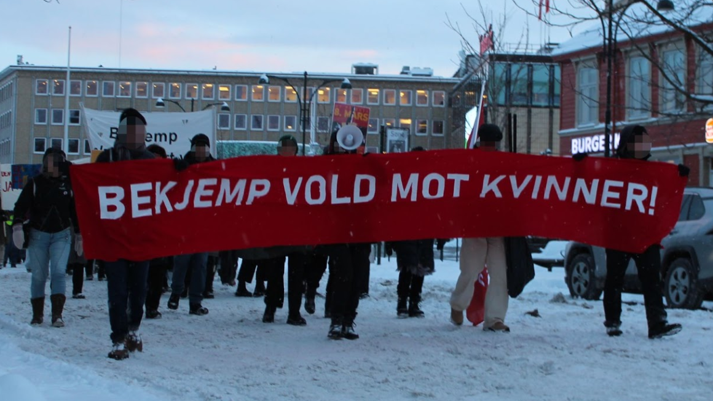
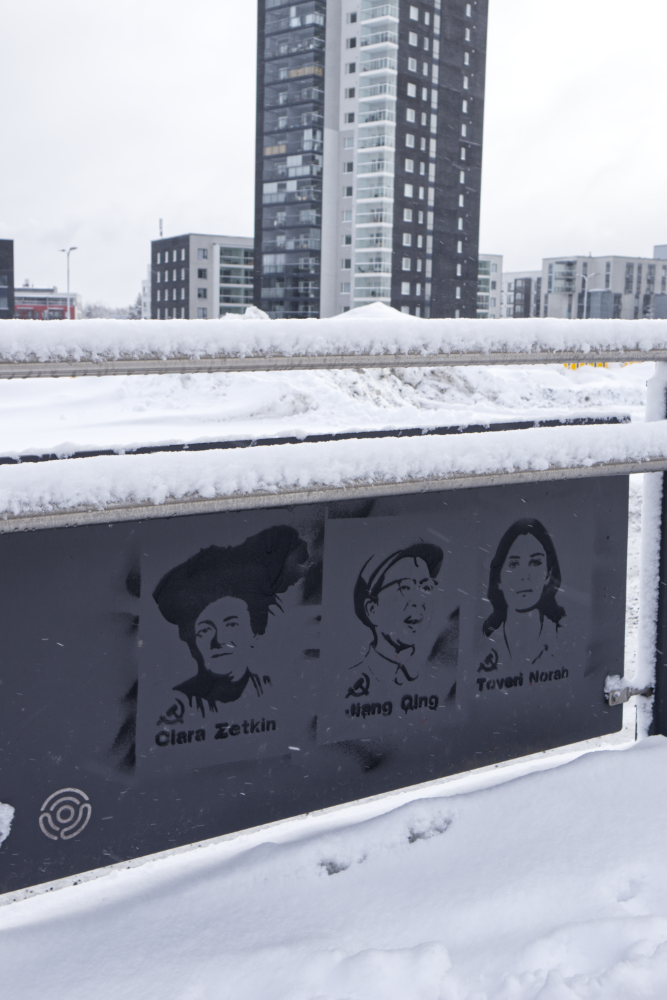
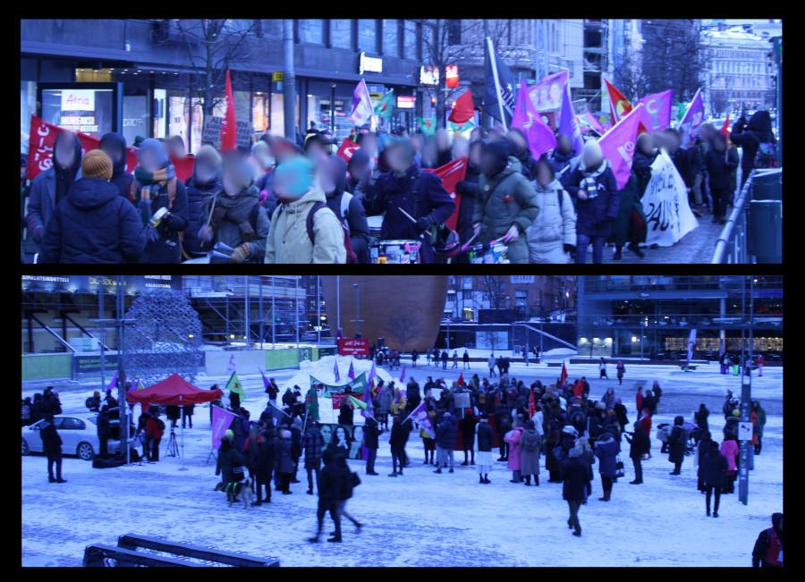

[This lan. PDF][This lan. ODT][This lan. MD][This lan. TXT][This lan. TXT LIST]
Please select your language 请选择你的语言:
Author: Alan Warsaw
Publish Time: 2023-03-09T05:24:57+00:00
Update Time: 2023-03-10T01:26:00+00:00
Images: ['naxals-in-gaya-800x445.jpg']
Tags: ['Central Reserve Police Force', 'Chhattisgarh', 'CoBRA', 'CPI (maoist)', 'CPI(maoist)', 'CRPF', 'India', 'Naxal', 'naxalites', 'naxals', "People's Liberation Guerrilla Army", 'PLGA', 'police', 'PPW in India', 'Special Task Force', 'STF', 'Sukma', 'Sukma District']
Categories: ['India', "People's War"]
Sukma District, March 9, 2023: Two commandos of the CRPF's elite junglewarfare unit CoBRA sustained minor injuries in an encounter between securitypersonnel and Naxalites in Chhattisgarh's Sukma district on Thursday, policeofficials said.
They said at least half a dozen Naxalites sustained bullet injuries in thefirefight.
"A joint team of the Special Task Force(STF)and Commando Battalion for Resolute Action(CoBRA)of the CRPF had launched the operation from Dabbamarkacamp towards Sakler when the exchange of fire took place at around 9 am,"Sukma Superintendent of Police Sunil Sharma told PTI.
"Personnel belonging to CoBRA's 202nd and 208th were involved in theoperation.
The encounter lasted for around 45 minutes and on finding security personnelzeroing in on them, the Naxalites escaped into the dense forest," he said.
A huge cache of explosives, including shells of BGL(barrel grenade launcher),was recovered from the spot post the encounter, he said.
"Inspector Munesh Kumar Meena of CoBRA's 202nd battalion and constable AmitModak of CoBRA's 208th battalion suffered minor injuries. After administeringprimary treatment, they were shifted to district headquarter for furthermedication," the SP said.
Some Naxalites also sustained bullet injuries during the gun battle and wereseen fleeing, Sharma said, adding a search operation is underway in the area.More details will be had once the patrolling team returns to its base, Sharmainformed.
Source : https://www.deccanherald.com/national/north-and-central/two-cobra-> commandos-injured-in-encounter-with-naxalites-in-chhattisgarhs-> sukma-1198459.html
News Source: https://www.redspark.nu/en/peoples-war/2-cobra-commandos-injured-during-encounter-with-naxalites-in-sukma-district/
Author: Tjen Folket Media
Description: The match committee has shared reports from Oslo, Bergen, Trondheim and Kristiansand, where they have marked the workers' international match day with passwords and slogans against violence against women, against imperialism…
Publish Time: 2023-03-09T16:00:57+00:00
Modified Time: 2023-03-10T02:44:44+00:00
Images: ['Foto-34.png', 'O-fb_r7AKg-v2xdFhbcx3oJwXuFb8GHtArCnIr1Xo1OB8twzeWQFX0W3jkaMY16kbYuGCUZ8AF4Z9XS3MyeTErUrBHmfOUQJ3mvckbwBzQU9FOaKVmXC3jTV2KLg2UarjtewwT7Tx_hBpeI0j8a1XvM', 'naadqV03RPFsg64PJTfndBjffBXcaFlqw1tt4yGFJURPlXVDIvQpCkp4KbfqzSkYZibtKH0F7B4ue083VfRwgLzkn6FUHoLWz16K3c6dW-p1zpBomFMyMs9eHewb_pGHDMMW_SyErULHk8V30aIsUBw', 'iKEP6HriY3DrbHGx3ppmdEqypbbrwzLhmfP2pp84LUSLBLh8z-oYiwJSCBb7sdsH0v5s3LOCiRilRXsUxdFaab60pejeRWMO7q0qw7FaRjn7ui6oD9nj-uXDjkK6ooQnL_fjdz9s_GwNuqEYsg_jN9E', 'SVAp541pGu7G9pAbbaWdRAUokqvHTNQrqJnCSRfrv-krv4tOu1uMBLoFasZqOY_6veSaRHf21_xoiEVGq1toG7jaVNvUfGYuEmUgC0BTUr5CaJDGmawRW_QgF0qrqZ_djLsEG-RCugIGB04zeJkFJN4', 'N5RG7d2PiXEk56L9dvkFNUs2dWxOFmFA3uUqgaMuPM82SSS1izbv0_velOhIC8HC3vLELU0Z4q4GJBeiuQHzTQdEcVptc2jrF3XJ3dBOSXIQ6_IrRkt5xORdk7QJb5gzH0zlz6e4P5NMHbAWVVeBJjE', 'Ge7qI1fbUJc0fEY8IgMeTu_qaB_zyxEQiQPreihyZzy25aokuxLX8aoimhfr3_ifVOhQGP-GT45BQqwuZ7_ZnL72dL5y_3Ttkz-2aT0QAyvD7e2r0gz4FBkO5oTwT6Z8GJuZVfPRcHfgGlxwuSAwaWI', 'YBfXOBE4KW0PORc7vmIKED4X6xpFI7ogDhexIOnu3K3_MlWcSm1aiPDbPOKl2cumLtTc-R-sHRVBk7n5RM9_2NGCv6jkRbRdZwr_KgTu0_C2rEmrgG6LJvOkQbQnQ8dunATJ9wfG-MFfZT0wIuhzczs', '5w3ca3WaKFD9VieGa-T0HOYBLUd6lu-fMjbD_8lBHohzEJqJy7Fj_VsUZv1JfBOnYhiZOB4quY-WCpkAo4vkkF9ioTvww2GtvnxR4YZkHnYsadw0e3PT6XZNvCzubxu9_op2WNhwBlVi5WW54jJZ_xQ', 'jQLQjJ5XnziDwYYa9RB7H-FzOzv3Do1226wYzw3Ypz7_Y6PB4INEColxZm3uCF_piUTjWsK8IYByf3vnG5RhooUyaGzdTpqfFa08XaA6euu7QhcCiXT8yxQTu44UIwNqnq0QaHDH39C1AHxVQjQap64', 'F8mFTR4WE1akBu-83HGcogPVDs5Ln-i346SWQLEbowwhiA8rQfyLjsQF-5DJJ8nxwlg8k49jD3HZ53OPeOt-VgNoDAvw-4pGCHkshz7WIpEnkwmY-Dkd3PSk7eNDvUz2E2UR18jVmozmERsPGK_xAWY', 'DCMerDgwiwaMX-B5i_t8z7vOfMJQHoCHgwGtA1j-gaVv9wwSGFbd9kchJDOhGxq39ZWBaSP21vegHEUWxdiLqZx3AV_eKIMUfg5IXe1CgLr4wRMMJzYjdWJaC6rln80Uc9wtqNDoA0N_ToALPxchT5M', '2ckiKe6seZip2oknZtOKo69p3bp7VG-nvnK3Ex2hgRHVSO8mOvS-Pq4AD4XfTNNeBsgU5Ht4aX8BarY6P3j2Q611_8XT1w0Ux6jSfwucmeTb6k5ugidrnLQOeL8EmBjnmdU39z5IsyI6Gj6eDztEHPM', 'Zbz5b_3QKBd64xsUbdLQC-Fa0tBB4GuJKwGmOKQg_--GsoAdW1VQ7Nn3Ot-Amsk4CbcBGafYpGX7MesOrwhsT9DcDlZFf37zR_NZKXUdI890AIUrnVRlgwnnCHXo2icsY1okCB_i2hjpp-TAWycX_KU', 'ANu8z2cTcIE3g-gznCbL4EQB0tjTolC92gGCV-BqG5OaTi3ihOfGNJn48bROUji_FxIYCob-XGPaYlHm9zMyw7N2YAbuvHbOGlJ_d_Vmxf3FacrbZYbxQToRwH6OKhSXSjxOjC-SLNh0PHXShwIajF0', 'VHTvZjC6djXG9egidB7s7MgAkBMU-q8wDQVTsfnqIhzCV1Rkod0wF7WSmCGotXVQRXTVAoxTscv3Ql6T-KfJwCggmF4wnPWEMkzBeLoNKUnIqPAB4F0Sm8TPXp7zrol71KOK3EVQ--AVcauFVUJF9YY', 'MZ1PK3Ba-m2P27pNhc-G_76WgHb83BmJgMkm0Wzt5M69fcAz5WE9Eg5T1nQqJRYKmPtcXYtxZL7EjGhfIUcRZwAfeZR01Ij0Ct4n4ULYIrSGa17YP-L6zH03Q6suZQG91Nn-iRcQoDC9BXEFuRx3Jjk', 'Dlby5DCBlLJ3xQR1lrPgE-ih7Ry2wjYHRwUpd-G6R766MvMp7mO_iBjMpcl1GzLoGAiLmFdb_H4WQx9-VgBgH99Zv9xvue8915aJEC_BPfLCPgD59foc8QXwiUiuHWLBnFgHFtdlXU3lgHbRsudJ_4w', 'QDY7p8u23EBS00oK2RARmzPpBx8WKqWGWeMLE4tz8MRHVA9Gz_ECTfyN6TxP1oTdaGjVM8GVeXWXdH_E_TNm6ebP1ImQ7KBQV-vUF9NKZ9V9SrLqJgviQYvmhMU2FCv6xDVD47degJuBX-ln6n8U5js', 'AWLs4dakBmNOaEJup_Umdesvyhtmt9BZBLFbNAOwMX2gIYYZ6mK866wH9quomp4cV7nCVtKJ5wISWyQjtEHgOr25kTvhXICLHI3okH46gZ0egXpRRe4lVHiM8IkYFBs8PW3RxoRsczX7H7rAtrlEUsw', 'Cu0qdoFn9Y1H5LqwT_pL3VKM3jxyvydPPHHJmcuAlwPDx-rfcgMrXKb8sM-s-0qLSE54wVP1ifVOFIcKwZPBZhrb16l5xwPfT15rE9K-OcTAcNta9-xJtCGSLSP1atJex7lYFAr1MmftIweM23zW120', 'JiOTopJzhSoSdzvisSuJWOXC_k-D9LNIp63_5gL5tvfcUX_tYcUzVsycdWC93iLmaJ84YhUZvW7X-DJ3fdY3rMrUBrS-AzlURyGVzZex4o5DYVqtcwqlwn6kNVqt1PeJ9RowsqZqkXBUWeVdw4V--48']
Tags: None
Category: 'Aktiviteter'

The Fighting Committee has shared reports from Oslo, Bergen, Trondheim and Kristiansand, where they have marked the working women's international fighting day with paroles and teams against violence against women, against imperialism and for a class line Ikvinen movement. The activists have participated in March 8, had different markings and distributed The joint Nordic call .Contents
The fighting committee in Oslo has marked March 8, the working women's international match day, along with a number of other organizations. The marking was carried out in a great way, with appeals and slogans, and there was both a self-emoning as well as a common block in the March 8 train, where over 50 people participated.
The match committee participated in the March 8 mark at Torgallmenningen under the slogan "Fight violence against women!". Behind the slogan, slogans were shouted like "wave for wave, battle for stroke, against imperialism and patriarchy!".
Later, a mark was conducted at the blue stone, under the same parole, where an appeal from the combat committee gave a speech against violence against women. More passing passers -by stopped to listen to the appeal and outlaws were divided.On the same evening, "MIFF" held a meeting for Israel. At the meeting, Richardkemp, a former officer in the British army, spoke part of the British cooking forces first in Ireland and later in Afghanistan.
Activists from the combat committee joined activists and Palestinians who gathered outside the meeting room at the Literature House in Bergen and shouted slogan courses and the occupation and waved Palestinian flags.
In Trondheim, activists from the match committee marked the Working Women's International Fight Day under the Parols "Out on the street March 8 - for a class line women's movement!" And "fight violence against women!" First, the match committee organized a mark in a pedestrian street in the center of Trondheim, with appeal, red flags and posters. This mark was held under the slogan "Out on the street on March 8 - for a class line in the women's movement!" In the aftermath of the appeal, the activists handed out flyers with the joint Nordic call.
After the markings, the activists attended the square meeting and the March 8 train in Trondheim, under the slogan "Fight violence against women!" Other organizations also went behind the slogan. It was shouted slogans against both patriarchy and imperialism, such as "stop violence against women," "" strike back, crush the patriarchy, "" "wave for wave, battle for stroke, against imperialism and patriarchy," "" "The drying years, tied the fists, fighting and doing resistance , "" "Strengthen international solidarity," "Fighting against capital and patriarchy, for a new working state" and "Russia, NATO, USA, happened away from Ukraine!"
The match committee participated in the March 8 train with the banner "Fighting violence against women". More individuals joined Parola, and slogans were shouted like "slopes, crushed the patriarchy", "wave for wave, battle for imperialism and patriarchy" , "Strengthen international solidarity," and "woman, life freedom". Music students played on the train and there was a singing song of "We must Höjavåra Röster" and "Jag Ropar".
The match committee has also participated in the 8th Mars Committee's work on the 8th March program train to create this year's main parole "Woman Life Freedom", and participated after the train at an event focusing on international solidarity, but panel conversations, appeals and Palestinian dance, and at a concert with a concert Tired elite.
Reference Reports from March 8 - The Fighting Committee
News Source: https://tjen-folket.no/index.php/2023/03/09/rapporter-fra-8-mars/
Author: Philippine Revolution Web Central
Publish Time: 2023-03-09T92:00:00-04:00
Modified Time: None
Description: Group of the Young Makabayan (KM) in Agusan del Sur painted calls in recent days in another ' another place in the town of San Francisco. Blushing the walls and roads
Images: ['km-agusan-del-sur-opod.jpeg', 'km-agusan-del-sur-opod-4.jpeg', 'km-agusan-del-sur-opod-2.jpeg', 'km-agusan-del-sur-opod.jpeg', 'km-agusan-del-sur-opod-3.jpeg']
Categories: ["People's War"]
Type: article
 Patriot(KM)In Agusan del Sur painted calls in recent days in various parts of Sanfrancisco town. The walls and roads of the terms "NPA 54", "VivacPP-NPA-NDF" and "Sampa in the NPA."
Patriot(KM)In Agusan del Sur painted calls in recent days in various parts of Sanfrancisco town. The walls and roads of the terms "NPA 54", "VivacPP-NPA-NDF" and "Sampa in the NPA."


 Young people are full of enthusiasm launched "Pint Operation." According to participants, "At first we were joking but in spite of this there was a longing for its contribution to the upcoming anniversary."
Young people are full of enthusiasm launched "Pint Operation." According to participants, "At first we were joking but in spite of this there was a longing for its contribution to the upcoming anniversary."
"We are more excited about the next duties distributing polytoatatoat postering," they added.
"We are pleased with our contribution to the NPA's anniversary celebration. It is a small contribution but it is important in propaganda for the promotion of the struggle," the people said.
They added, "In the future we will directly participate in the Sademocratic People's Revolution by filing the NPA."
KM was founded in 1964 and one of the allied organizations of the NationalDemocratic Front of the Philippines(Ndfp). Kabilang sa mga tungkulin ng KMang sumuporta sa armadong pakikibaka ng BHB.
News Source: https://philippinerevolution.nu/angbayan/operasyong-dikit-pinta-ng-km-sa-agusan-del-sur-inilunsad/
Author: Philippine Revolution Web Central
Publish Time: 2023-03-09T94:00:00-04:00
Modified Time: None
Description: Relatives of Bloody Sunday Massacre and democratic organizations protested at the Department of Justice (DOJ) office in Manila City on March 7. They insisted on justice
Images: ['bloody-sunday-massacre-protest-doj.jpg']
Categories: ['Human Rights', 'Regions']
Type: article
 Relatives of Bloody Sunday Massacre and democratic organizations are protesting(DOJ)In Manilaacity on March 7. They insisted on justice and responsibility to the police involved in the killings. The action of the Defend SouthernTagalog group was led. After that, the groups protested and protested at the Nationalintelligence Coordinating Agency(NICA)in Quezon City.
Relatives of Bloody Sunday Massacre and democratic organizations are protesting(DOJ)In Manilaacity on March 7. They insisted on justice and responsibility to the police involved in the killings. The action of the Defend SouthernTagalog group was led. After that, the groups protested and protested at the Nationalintelligence Coordinating Agency(NICA)in Quezon City.
Nine Masa Masa and Southern Tagalog organizers were killed in March7, 2021. These include New Alyansang Makabayan(BEHIND)Cavitecoordinator Emmanuel “Manny” Asuncion, Farmers and Fishermen SIARIEL EVANGELISTA and Ana Mariz “Chai” Lemita-Evangelista, Samarartic organizers Mark “Makmak” Lee Bacasno and Melvin “Greg” Dasigao, and Native Abner Esto and Edward Esto, and leaders of Sinarandy Dela Cruz and Puroy Dela Cruz.
According to Defend Southern Tagalog, killing the victims can be considered violated by international humanitarian law because. The civilian victims were targeted after repeatedly called armed combatants and members of the revolutionary movement before and after they were killed.
Meanwhile, it will be noted that on January 16, the DOJ's decision was announced on the public to dismiss and dismiss the murder cases filed against the 17 police officer involved in the killing of the mannyasuncion leader Mannyasuncion, one of the victims of the Bloody Sunday massacre. According to the DOJ, police are being acquitted because of the alleged "lack of evidence."
Right-St-st Paralegal and Brother-Stcoordinator Nimfa Lanzanas, Bayan Laguna Coordinator Mag Camoral, Leaders Esteban "Steve" Mendoza, Eugenio Tadeo, and Joan Efren, were also arrested on that day.
According to Mags Camoral of Bayan-Laguna, “As one of the arrested, worse military-police forces in accusing the fabricated cases against the activists. Two years, no hearing has been held, Cabuyao Regional Trial Court has not been fiscal(RTC)Branch 108…"
News Source: https://philippinerevolution.nu/angbayan/hustisya-giit-sa-ika-2-anibersaryo-ng-bloody-sunday-massacre/
Author: Philippine Revolution Web Central
Publish Time: 2023-03-09T96:00:00-04:00
Modified Time: None
Description: The fisherman's group calls for the national power of the Philippine Movement Movement (PAKAKAKA) to hold the capitalist owner of the MT Princess Empress in the damage to the ocean
Images: ['Oil-Spill_Oriental-Mindoro-1024x683.jpeg']
Categories: ['Environment', 'Fisherfolks']
Type: article
 The fisherman's group called for the national power of the Philippine Movement Movement(Pamalakaya)that the capitalist owner of the MT Princess Empress will be held accountable for the damage to the ocean as a result of its sinking and disposal of its oil.
The fisherman's group called for the national power of the Philippine Movement Movement(Pamalakaya)that the capitalist owner of the MT Princess Empress will be held accountable for the damage to the ocean as a result of its sinking and disposal of its oil.
The oil spill tragedy took place on February 28 when the Tanker Mt Princess Empress was submerged in the sea. The tanker cargo is 800,000 liters of industrial crude crisis.
They are demanding to pay for the fishermen who have destroyed the livelihood as a result of the incident and to turn off the cost of cleaning the oil affected by the thrown oil.
An estimated 18,000 fishermen are affected in Oriental Mindoro caused by oilspill. It has also reached the neighboring coasts of nearby provinces.
According to the Pamagay-Panay report, coastal barangays Saantique have also been affected where 1,200 fishermen and residents have been affected by the Caluya town of Caluya.
The Parish also calls for the financial support for fishermen who have lost their livelihood and has been affected by the oil spill in Oriental Mindoro since last week.
“One week the livelihood of fishermen in areas affected by the oil spill, including the island of Semirara, was affected. They need a daily and daily supplies for their family, "said Nifernando Hicap, national president of the Paraga.
He insisted that fishermen were calling on the relevant government agencies to take action to clean the spread of oil and deliver assistance to affected fishermen and beach families.
According to the Parish, they will surely cause the last fishermen to collapse because of its possible damage to reefs(coral reefs)and mangroves(mangroves)which serves as the home of fish.
At the forefront of the University of the Philippines Marine Science Institute, up to 36,000 hectares of Coraf Reef, 9,900 hectares of mangrove and 6,000 hectares of the eneagrass and could be affected. Besides this, the local and national government should also prepare for the possible fish kill due to fish poisoning and water contamination.
Author: Philippine Revolution Web Central
Publish Time: 2023-03-09T97:00:00-04:00
Modified Time: None
Description: The Jose Raping Command is calling - New People's Army Masbate to the Masbato, especially mobo citizens to eliminate fear and combine the new military attack on the
Images: ['npa-masbate-map-1024x576.png']
Categories: ['Environment', "People's Struggles"]
Type: article
 The Jose Raping Command - New People's Army Masbate is calling on the people, especially the people of Mobo to eliminate the fear and oppose the new military attack in their town. The rest of the mobo serves the military occupation to enable the expansion of the operation of the massive Minang filminera - Masbate Goldproject.
The Jose Raping Command - New People's Army Masbate is calling on the people, especially the people of Mobo to eliminate the fear and oppose the new military attack in their town. The rest of the mobo serves the military occupation to enable the expansion of the operation of the massive Minang filminera - Masbate Goldproject.
Specific purpose of militarization under the retooled community supportprogram(RCSP)the eviction of communities that will be covered by the film's expansion. In fact, the town of Mobo is expected to be not only the military occupations but also its neighboring towns. The filminera's long-standing interest in the mounting part of the second district of Masbate is not public.
The AFP-PNP-CAFGU is the largest private army of the large foreign atkocal corporations. Military and police were used to expand Gov. Antonio T. Kho. Military operations were also drowned by the Empark ekoturism's cities to force the farmers to sell their land.
Knowing the mass objection, the filminera will certainly no one to do with the aggressive role of expanding the operation. In fact, the filminera is likely to have lost the dispute of some high -ranking local military government in the province of the Kikbak division and has given it a bundle of exploration.
Knowing the service and terror of the previously suffered militarization under the RCSP, the citizens of Mobo should not allow the repetition of the enemy.
The Masbatan people should not have agreed that the filminera will expand. In more decades of operations, several metric tons and hundreds of billions of gold and silver have been plundered by the large Mina company but Masbate still remains one of the poorest companions in the country.
In exchange for fear is the sting of our mountains, the baldness of our forests, the poisoning of our waters and the loss of our fisheries.
Author: carga
Time: 2023-03-09T97:00:00-04:00
Head Description: We share a note from infosoberana.com.ar
Description: Regarding the murder of the Child Máximo Jerez, a mason falls from a roof, dies and no longer lunch, innovate, then, the trope, the metaphor? Another looks in the mud bones, shells How to write, after infinity? Fragment of "A man passes with a bread to the shoulder" by César Vallejo & Nbsp; On & Hellip;
Images: ['Rosario.jpg', 'Rosario-Maximo-300x168.jpg']
Type: article
 #### About the murder of the child Maximum Jerez
#### About the murder of the child Maximum Jerez
[](Images/Partido Communista Revolucionario/2023-03-09T97-00-00-04-00/Rosario-Maximo-300x168.jpg)On March 5 at 1.30 hours. While celebrating a birthday with friends, in the door of his house, he falls riddled by the killing guns the small maximum. Three other children with him, one of whom fights for his life in a hospital in Rosario.
Máximo, kid the Quom community, played football in the club of its “Lospumitas” neighborhood, and toured daily those cerrile and open -pit dogs. Son of work, it was forged among those people where misery is current currency, and the Doñas lend bread or eggs fattening a lean lunch. In the afternoon, at the exit of the school, Picadito in the Potrero of the corner, where it reaches to emerge with the left -hander.
This is how Maxi lived, between half -building houses - we were missing for more bricks and before there is something on the table - with his friends sitting on the nights -see - the heat is infernal - and dreaming of hitting it in football, or in some decent shell that contribution to the house. Nothing more than dreams of a kid from a neighborhood that borders the Ludueña stream.
Also living with the transero and the kiosk, where when the lights of Latardean Merodean cars - high -end some - seeking to supply its delocure quota powder. Where the alcahuete of a commissioner or deotro character is periodically, goes on to collect the envelope for his pattern.
Until one night, those little streets in the neighborhood became a crap, blood and death. Maxi fell, destroyed his chest by foolish lip, and with him another 3 little ones, who survived, perocontinuate hospitalized in observation.Filling marches with posters that reflect faces of children and aullandojusticia. Because behind the hand that pressed the sordid trigger throbbing some world of the most sordid interest. Of spurious alliances with sectors of the State, yes, of that state to which protection is required, when the most time we have to protect ourselves from it.
On Monday, March 6, after watching Maxi's body in his club, the Barrio, people distilled hatred and outrage. Except for some social organizations, no official, no policy of the translational parties came to bring a word. Of course, at this time the internal ones are awaited their cares, and the people, their daily dramas, their small pains like this, to wait.
The Transa, alleged Maxi murderer, could not lose profits from its sorted business and, as always, opened its doors.
Then a long -contained spracking crossed the hotels del Barrio. What started setting fire to the Transa motorcycle was transformed into a whirlwind that swept that bunker, as hated as feared. The Transa, and Susocios that were abroaded on terraces with their guns, ended up comomariones escaping and hiding from the vindicatory wave that requested their provisions.
Police appeared, first trying to save the transas of the previsible lynchings, hitting people, and hurting with death bullets. The fire already began to eat the housing of the transas, who were ahead of the police forces, who moved away from the land.
At that height, the elf of Rosaria illuminated and greeted a standing neighborhood, which rose, first of all asking for justice for Maxi's murder, but also tired of humiliation, discrimination, dispossession, misery, Police cruelty, from the politician of the politician, of the liar noticia of some means.
Everything, absolutely everything bursts in pieces. People spoke with the facts.
We do not know how this story can continue. A backlash is predictable. But what we do know is that this day will be inscribed in the collective the people of the people, which one day like that, threw the myth of the impregnable Denarco. Myth that fed demosperanza resignation and hopelessness, which unscrupulously propagated the theory that, since the narcco is informed, must be delivered and legalized.The people, the humble people of my town, marked a path. Alnarco can be defeated, but in struggle without concessions. What will the ineffable Patricia say that pretend to flood the city with thousands of Gendarmes, an army included. Isn't it this way he hopes that the street will not be overflowed with? Already some boys of the media, such as one who toured the streets with Amalia and their useful vests. Boy who exhibits a notorious disconnection of the fierce system with his brain.
It is true that the enemy is powerful, that the narco is part of the state of dominant laclas to which it serves, and that it has established a solid network with the security forces, politics, the judicial institution and the financial posters and financial posters and BANKS.
But it is no less true that on Monday, March 6, this sinister alliance Sequebró. They are not defeated, much less. But it was demonstrated that it is possible. It corresponds to popular organizations, the labor, appropriate, politicians and state personnel with patriotic spirit, solitude to the neighbors of Los Pumitas. We have a long way to remember, that every day we are more, and that never a kid less for the drug.
Rosario, March 8, 2023
Horacio Tabares writes. Psychologist. Drug expert. Devínculo Director, Community Center for Mental Health.
News Source: https://pcr.org.ar/nota/cronicas-del-desamparo-muerte-dolor-y-pueblada-en-un-barrio-rosarino/
Author: Philippine Revolution Web Central
Publish Time: 2023-03-09T98:00:00-04:00
Modified Time: 2023-03-10T10:27:10+00:00
Description: Strongly condemned by the NPA-Sultan Kudarat under Mt. Daguma Sub Regional Operations Command-Far South Mindanao Region (FSMR) The Four civilian attacks, with two
Images: ['npa-sultan-kudarat-1024x576.png']
Categories: ['Human Rights']
Type: article
 Strongly condemned by the NPA-Sultan Kudarat under Mt. Daguma Sub Regionaloperations Command-Far South Mindanao Region(Fmr)Four civilian attacks, with two minors in Sitio 27, Brgy.Sangay, Malamansig, Sultan Kudarat. On February 27, at 7:28 am at night the brutal attacks of civilian attacks of the wild animals near the sacrifice. The victims are the Nation of Beach, age 30The, Menyo and Three children, Epin Dasol, are in the righteousness, have a child, Waldounna(16)and Verano sail(15)In all respects of Sitio strips, Brgy. Was resolved. That rule results in the dead(Gantang)and one wound(Dasol).
Strongly condemned by the NPA-Sultan Kudarat under Mt. Daguma Sub Regionaloperations Command-Far South Mindanao Region(Fmr)Four civilian attacks, with two minors in Sitio 27, Brgy.Sangay, Malamansig, Sultan Kudarat. On February 27, at 7:28 am at night the brutal attacks of civilian attacks of the wild animals near the sacrifice. The victims are the Nation of Beach, age 30The, Menyo and Three children, Epin Dasol, are in the righteousness, have a child, Waldounna(16)and Verano sail(15)In all respects of Sitio strips, Brgy. Was resolved. That rule results in the dead(Gantang)and one wound(Dasol).
Matod sa nakalingkawas sa maong panghitabo, nanglakaw sila subay sa dakungdalan nga adunay espat sa ilang mga ulo, hangtod makaabot sila sa mga balay.Sa taknang alas-7:28 kalit silang gipabuthan sa 37th IB nga nag-opereyt samaong lugar. Nakasinggit pa dayon ang biktima nga namatay og " sibilyan ni"apan padayon gihapon ang pagpamusil nga mokabat sa usa ka oras. Hangtod sapagkabuntag, nagpadayon sa pagpabuto ang mga berdugong sundalo. Matod sa tahosa kapamilya nga nagkuha sa patay'ng lawas ni Gantangan, sa sobra kadaghan saigo kaniya, nanggawas ang tinae ug halos maputol ang lawas. Gibutangan usab ogusa ka M14 og usa ka karbin ang iyang patay nga lawas aron himoong lehitimoang pagpamatay.
Kining maong panghitabo, dili na kini bag-o nga hinimoan sa berdugo,mersenaryo ug pasista nga AFP. Gani kon mahinumduman niadtong Septembre 2020,gipatay ang duha ka sibilyan nga sila Dino Limboy og Makargas sa Brgy. StaClara duol sa ilang balay. Dugang pa niini ang panghitabo niadtong Hulyo 2022kung diin gipatay usab si Kalesa Langgaw sa Sityo Matingaw, Brgy. Baluan,Senator Ninoy Aquino, Sultan Kudarat sa 7th IB.
Pipila lang kini nga insidente nga nahitabo sa mas daghan pang panglapas sakatungod-tawo dinhi sa Sultan Kudarat.
The uninterrupted military operation and Sprinkaging AFP Sadded to Kill Poor Adjacent to the US-Marcosjr regime, here in the 2nd Dalaxy Sultan is the shape of the road, logging, plantation and other injuries to nature project. Unsteady treacherous rights of mankind is easier for anger to resist their struggle to achieve their democratic interests protect the inheritance.
News Source: https://philippinerevolution.nu/statements/mga-sibilyan-brutal-nga-giatake-sa-37th-ib-1-patay/
Author: Philippine Revolution Web Central
Publish Time: 2023-03-09T99:00:00-04:00
Modified Time: 2023-03-10T06:48:12+00:00
Description: Revolutionary teachers and academic staff are united under the Katipunan of Nationalist (Kaguma) in the fight against drivers and the entire people against counter-poor and contrast
Images: ['katipunan-ng-mga-gurong-makabayan-kaguma-1024x502.png']
Categories: ['Teachers']
Type: article
 Revolutionary teachers and academic staff are united under the Society of Nationalist teachers(Kaguma)In the fight against the drivers and the people against the anti-poor and anti-people public utility vehiclemodernization programs that are promoted by the Marcos-Duterte group. The old-fashioned tribute to the successful ceasefire in March 6, 2023, re-proved to the strength of the people's collective action.
Revolutionary teachers and academic staff are united under the Society of Nationalist teachers(Kaguma)In the fight against the drivers and the people against the anti-poor and anti-people public utility vehiclemodernization programs that are promoted by the Marcos-Duterte group. The old-fashioned tribute to the successful ceasefire in March 6, 2023, re-proved to the strength of the people's collective action.
From the deafening, the militant action of the drivers and the people's support of the Marcos regime has pushed the Marcos regime to deal with the transportation sector sector. While continuing to monitor and demand to finally dismiss the jeepneys-phase out program, drivers and citizens have pushed the MoMarcos regime to include drivers, operators, computers, and other affected refrigerations in recruiting such policy.
It was a huge slap on the thick face of the dictatorial dictator Sibise-President Sara Duterte using the Departmentof Education secretary(DepEd)was unlucky and repeatedly redtaged and stunned by drivers who participated in the ceasefire and the patriotic and progressive teachers who expressed action support. To her non-Fall revealed that the ceasefire was "futile" and "communist", Sara re-showed her true color. Fascist Courage is just a fight against the poor The Duterte's brain-pillow knows: indifferent to the Filipino masses. There is no difference between his father who previously declared the drivers "I have no idea if you are hungry."
Sara Duterte has even made the impact of a stop-schooling effect on youth education. But in fact, the teachers and the people of his fascist initiatives at the DepEd know the true prevention of the Filipino youth of quality and meaningful education. Come to Sara's old age: Instead of blaming the ceasefire, look at himself in the mirror first. Stop nonsense Intel Funds for DepEd and insist on the Mandatory ROTC and instead pay attention to the poor condition of the teachers and the educational sector.Long live the ceasefire!
Long live the success of the resistant people!
Continue the fight!
Author: carga
Time: 2023-03-09T99:00:00-04:00
Head Description:
Description: The #8m in the world women won the streets claiming equality that is still pending in the workplace and civil. In Jujuy, Gerardo Morales decided to fence the street of the Government House, prevent our mobilization and acts from having a sound-violating the soundist-while his officials and officials of his run over our rights. The & Hellip;
Images: ['Represion-en-Jujuy-8-de-marzo.jpg', 'Marcha-8-de-marzo-Jujuy-300x170.jpg']
Type: article
 The #8m in the world women won the streets claiming equality that is pending in the workplace and civil. In Jujuy, Gerardo MoralesDecidido fence the street of the Government House, prevent our vilization and acts from having sound-violating the soundist-while their officials and officials run over our rights.
The #8m in the world women won the streets claiming equality that is pending in the workplace and civil. In Jujuy, Gerardo MoralesDecidido fence the street of the Government House, prevent our vilization and acts from having sound-violating the soundist-while their officials and officials run over our rights.
The immense mobilization overflowed the siege at the beginning of the march, and returned to finish it at the end. This fence included in the closure numerous women political, dogs, bicycles, shields and unusual violence over many in the past partners, which were reduced, dragged by the floor andgolpeadas.
The shame of having security forces to fence our struggles in the streets, while giving the violent way to those who not only do not seerca, but be guaranteed positions in the state, generates in our society an advertising of impunity and misogyny that It derives in more violence, including aggressions from some building to women and their hikes during the prophecy, without any brake.
It was incredible the violence exercised by the police about the mother of Iararueda, who was protected by the mobilization overflowing, finally, the fence. Every 8m and keep demonstrating that Morales cannot with us.
Our movement has no roof, and it will not be Morales who tries to impose it. We repudiate and call reflection to the governor and the chiefs of the police who send the women police officers(also discriminated and raped within one's own force)To face us, we have just claiming for equality and against the macho violence that we are.
We lost daughters, sisters and mothers due to sexist violence, we lostdemasiado…. But we also lost fear. The streets are ours!
News Source: https://pcr.org.ar/nota/la-violencia-y-provocacion-de-morales-no-pueden-con-nosotras/
Author: Rosa Minine
Description: Friday, 10/03, at 8:30 pm, the São Paulo State Symphony Orchestra, Osesp, holds the Digital Concert: OSESP, Thierry Fischer (Regent) and Augustin
Publish Time: 2023-03-10T00:05:00-03:00
Modified Time: None
Updated Time: None
Images: []
Section: Agenda Cultural
Tags: ['Agenda Cultural', 'Augustin Hadelich', 'György Ligeti', 'Jean Sibelius', 'Orquestra Sinfônica Estado São Paulo', 'Osesp', 'regente', 'Sala São Paulo', 'Thierry Fishcer', 'violino', 'Wolfgang Amadeus Mozart', 'Youtube']
Type: article
Friday, 10/03, at 20:30, the Symphony Orchestra of the State of São Paulo , Osesp , performs the Digital Concert: Osesp, Thierry Fischer(regent)e Augustin Hadelich(violin). In the program, works of the compositors: Wolfgang Amadeus Mozart (1756 - 1791), György Ligeti (1923 - 2006)e Jean Sibelius(1865 - 1957). O evento acontece no formatopresencial, na Sala São Paulo, e online com transmissão através do canal daOsesp no YouTube.
News Source: https://anovademocracia.com.br/concerto-digital-com-orquestra-osesp-thierry-fischer-e-augustin-hadelich/
Author: ['icspwi']
Publish Time: 2023-03-10T06:54:41+00:00
Modified Time: 2023-03-10T06:54:41+00:00
Description: Visit the post for more.
Images: ['Sticker_1.cleaned.png']
Categories: ['Uncategorized']
Type: article

Like Loading...
News Source: https://icspwindia.wordpress.com/2023/03/10/switzerland-for-india/
Author: ['icspwi']
Publish Time: 2023-03-10T06:55:41+00:00
Modified Time: 2023-03-10T06:55:41+00:00
Description: COMMUNIST PARTY OF INDIA (MAOIST)Central Committee Press Release9 March, 2023 Observe 23rd March as an Anti- Imperialist Day. Condemn the Imperialist wars, the loot of natural resources and subjuga…
Images: []
Categories: ['Uncategorized']
Type: article
COMMUNIST PARTY OF INDIA(MAOIST)Central Committee
Press Release 9 March, 2023
Observe 23rd March as an Anti- Imperialist Day. Condemn the Imperialist wars,the loot of natural resources and subjugation of working class and the toilingmasses!
Like Loading...
News Source: https://icspwindia.wordpress.com/2023/03/10/cc-cpi-maoist-declaration-against-imperialist-wars/
Author: fannyhill
Description: The electronic edition of Tuesday seven March of the newspaper tomorrow reports a long interview by the Cuneo Democratic Cuneo deputy ...
Time: 2023-03-10T09:44:00+01:00
Images: []
The electronic edition of Tuesday seven March of the newspaper tomorrow reports Unalunga interview by the Cuneo democratic deputy Chiara Grybaudo- Great supporter by the newlyh secretary Elly Schlein.
If between the two personalities mentioned above there had been total commonality of ideas, it would be serious to worry seriously that the "new course" of the party with aroma venue, in the former convent of the Nazarene, resembles the newlyhworked one.
In the days before, the reassurances of the policy manager on international branches had made it clear that in the streets of Viasant'Andrea delle Fratte 16 nobody questioned the sending diaments to the junta in power to Kiev.
According to what emerges from these new externalizations, Also on the themes of the work seems to be not intention of changing compared to the alpasso: on demand if it regretted having voted for the Jobs Act, in essence by defending the unworthy measure wanted by the sword wanted by Matteorenzi.
If Schlein thinks, also in this case, as her appearance appears that the much -sized "turned" compared to the past will not have not been there or, at best, it will concern a simple "refreshed" to the facade of the measures supported by the previous management
Bosio(Al), March 10, 2023
Stefano Ghio - Communist proletarians Alessandria/Genoa
News Source: https://proletaricomunisti.blogspot.com/2023/03/pc-10-marzo-se-elly-schlein-la-pensa.html
Author: prolcomra
Description: The man of planted in Libya the beam-imperialist government Meloni/planted/Salvini financed the trafficking with half a million in his pockets ...
Time: 2023-03-10T10:52:00+01:00
Images: ['ministri-interno-italia-lib.jpg', 'Piantedosi-fermato%20trafficante%20amico.jpg', 'Cutro-famigliari3.jpg', 'Cutro-famigliari2.jpg', 'Cutro-famigliari4.jpg', 'Cutro-famigliari.jpg', 'Cutro-Piantedosi%20dimissioni.jpg']
Stopped with half a million in your pocket
The man of planted in Libya
The bundle-imperialist government Meloni/Planted/Salvini finances it on the government of Libya while criminalizing, represses the rescue at sea n el more total contempt for deimigrant lives
 --- From the note of the Ministry of February 21: profitable interview on the contrast to the traffic of migrants and focus dedicated police acObondation in the fight against organized crime and terrorism
--- From the note of the Ministry of February 21: profitable interview on the contrast to the traffic of migrants and focus dedicated police acObondation in the fight against organized crime and terrorism
 Iriformista
Iriformista
Luca Casarini - 9 March 2023
In the midst of the strawberry, sacrosanct, due to the massacre of Cutro, a news has almost unnoticed: the French police stopped at the AiroportoCharles de Gaulle in Paris Imad al Trabelsi, current interior minister, with a suitcase full of cash money, Half a million euros, Dicui the minister did not "know" to give explanations. His passportediplomatica and who knows what else have allowed him to be released.Has accumulated millions of euros mainly through illegalal oil trafficking. He then put himself at the service of the current government, pretended to be promotion to Undersecretary. On the occasion of this appointment, the organizations for Libyan and international human rights, for example Aamnesty International, indicated it "as one of the worst violators of human didizers and international humanitarian law". For this gentleman, so warmly welcomed by planted in Rome, in the official united and international criminal court papers, we speak of "human diesel traffic, violence, torture and forced disappearances against thousands of dimigants and refugees". The meeting at the Interior Ministry last February 21 in the Quoale Trabels was received with all the honors, followed by that of Atripoli on 29 December 2022. The prefect Lamberto Giannini, Capodella Police, and General Giovanni Caravelli, director of theise, present.
In addition from Nigrizia : "One of the many lords of the war involved in abuse and trafficking in Libya .... The appointment is therefore read as a reward for services rendered and to" buy the loyalty "his and his militiamen, Fa know the French broadcaster RFI who reports the news.
In a United Nations report of 2018 Trabelsi is indicated as one of the militia leaders enriched thanks to illegal trafficking, in particular rumors.
The critics of Dbeibah believe that the appointment of a man with such an important position to such an important position goes beyond the prerogatives of the minister, he puts his interests to those of the State and despise idiots of the victims ".
The family members of migrants let you die in Cutro:


News Source: https://proletaricomunisti.blogspot.com/2023/03/pc-10-marzo-il-miserabile-e-disumano.html
Author: fannyhill
Description: By Enzo Gamba when, here in Italy, we relate to all the problem of the Russian-Ukraine war, one of the aspects that most affects us ...
Time: 2023-03-10T10:55:00+01:00
Images: ['Crimea.png']
 By Enzo Gamba
By Enzo Gamba
When, here in Italy, we relate to all the problem of the warruscans-Ukraine, one of the aspects that affects us most in the positions of the liberal-bourgeois political forces, their "Think Tanks" and of the large and medium that megaphone the "analyzes "And positions, it is the trivialization, a partial and unilateral trivialization of the facts, caught by extinguishing from the Complexesive context in which they are inserted. All characterized by a hypocirtodoppopesism on the intangibility of "principles concerning edemocratic human rights" and by a pervicace ideological approach which, first of all, becomes functional to the organization to the consent of the popular strata and to the unrealing in support of the main "protagonist" of this deacker Historical phase: the great Imperialistic financial bourgeoisie and of the unchanged propensity to an imperialist warfounding policy. Furthermore, needless to say, he falls the left left into the confusion and the uncertainty of what is precisely a class position in the struggle perla peace against the war.
"Deep" concepts are wasted, such as the "war of good against evil", of the war that has always been "inherent in human nature" and, in this case, in the "subjectivity" of someone in particular, the clear difference between "is remarked attackers and attacked ", the irreconcilability between" democracy and autocracy "evia talking. Does not shy away from an approach not even lasping,
Apparently more concrete and geopolitical, of the war as a result of the hostent among the "superpowers". Superpotenza is a concept and etymology that, alpari of that other "lucky" and tautological phrase of the left, that famous "strong powers", has the inability to explain the reality of the reality in depth and has nothing to do with that of "imperialism ", Concept, instead, to explain to us something more.To understand the current situation, what must be analyzed is precisely the peculiarmodality with which also in Ukraine, as well as in Russia(Not to speak unexpected events that have affected the countries of the former Warsaw Pact), the dismemberment and privatization of the public/state economy has been invented, the former USSR, the muddle and the looting that have distinguished it formation of the various financial ropes(oligarch)and the bloody of these for their location, in the context of an imperialismatransnational, in an area more linked to that of the Rublo(and in general "Asian")or to the "western" one(EU and USA)of the euro and the dollar, "souls" imperialistic-evaluating "souls that, in the meantime, on the remains of the former" Soviet economic market "in Europe, will be made" war "with each other, with the victory now almost established of the second on the first.
In particular, in parallel with what happened in Russia with Elli Primae Putin then, in Ukraine the internal clash to the large oligarchic-financial bourgeoisie between the various components, since the time of Julija Timoshenko Edella "Orange Revolution", but in particular in the first decade Of this, he characterized himself with marked nationalistic accents: pro Russian for coloroche were initially, for historical bonds and reasons, dominant in the new liberal, anti -rough and europidal economic and pro new economic for those who cheered themselves to replace them. Precisely this figure is able to deploy two fundamental aspects of the Ukrainian question and the consequential that arose, the first of a structural economic and the political-ideological economic nature of a superstructural nature, aspects that face and superimpose up to confuse and mask reality.The second aspect, inherent in the political-ideological superstructure and also the common to the events of many countries of the former USSR, is that of the neo-Nazi character who assumed and assumes the clash and the struggle towards Ilvecchio Ukrainian statist apparatus orbiting in the Russian influenza-political area area This struggle was headed and still addressed also towards those political-mayor, popular and "left" forces, identified at the same time, both as contiguous to the apparatostatatist inherited from the "communist" past and as a Russophile, forces that they were the fault and the fault e The responsibility to still defend those remaining social and trade union didizi not yet swept away by the wave "Democraticoliberist" and to be an obstacle to change in that direction. The new Ukrainian bourgeoisie pearl, the need to constitute a national and patriotic anti-rough identity, in addition to an overall Russian policy, to be a new and noverse, the historical-political revaluation all those phases that in the "recent" history(There is talk of a century)Hannovisto the political-cultural and social contrast, up to the war against the Second World War, between the "ethnic" Ukrainian and Russian components, from the tragedy of the Holodomor to the resolution of the Nazi period of Bandera and the full customs clearance exosted of forces that to those experiences Ideologically they refer, forces that will be decisive in the events of 2014. It appears to this understandable as parallel and specularly, by the Russian Great Bourgestyia Financial Eligarchic and the dominant culture that expresses, forms and develops that profoundly reactionary political ideology of the Grande- Russian who supports and substantiates his politics and who, in the Ukrainian case, declines as "denazification"(which we could define as a variant of the western "export of democracy" as a variant of the western).
The last development of the invasion of Ukraine by Russia as an accounting of the economic war between Russian and that-western imperialism, mainly UsameRicano, is yet another eTassello development of this articulated and complex socio-political framework, where different contradictions are intertwined than At the same time I am explanation for the ideological masking. Certainly, however, it is not possible to what is happening if, as we said at the beginning, it is beyond the historical-social and examination in a propaganda, ideological and purely "in principle" way only what happened since February 24th this year.
At this point it is good to remember and summarize what are the contradictions in the Russian-Ukraine situation so that it is clearer, also pearls of popular forces of our country and for us, how it can be "declined" lalotta for peace and the fight against the War, who is our enemy say and who is our ally.This heaping of contradictions, where the structural aspect of class felt and deducted from the ideological superstructural aspect, leaves little to simplistic solutions as regards the struggle for peace cannot be separated from being a fight against war and the policies of therms of the 'imperialism. What is indubitable is the fact that in both sides facing, there are our "class enemies" eche for the two peoples who have been dragged into the war it is not sufficient, under the auspices of the reactionaries on duty, imperialism foreigner, but it is also necessary to fight your own, under penalty to be foolish meat for your bourgeoisie. Unfortunately, this autonomous consciousness said internationalist has been disappeared for decades, at least in the European reality, but its absence immediately requires us to fight us at least for the fire. The non-existent theoretical-political-organizational autonomy of the left class of class, in Italy and in Europe, the "bad side" Mancantenelle contradictions mentioned above, is the real problem of both the influence of the subordination of the popular classes and the general movement for Lapace towards the War imperialism, both of the possibility of practicing unareal "proletarian internationalism" policy that does not fall into the adhesion in the support of one of the two anti -Popular, reactionary sides in the field
News Source: https://proletaricomunisti.blogspot.com/2023/03/pc-10-marzo-sulla-guerra-inter.html
Author: SERVIR AL PUEBLO
Publish Time: 2023-03-10T12:18:51+00:00
Modified Time: 2023-03-10T12:18:51+00:00
Description: During this, last week revolutionary activists of Valencia have carried out different actions, both propaganda and agitatívas, following March 8, International Women's Day TR ...
Images: ['img_3674.cleaned-1-edited.jpg', 'img_3669.cleaned-edited.jpg', 'image-17.png', 'image-18.png', 'image-19.png', 'image-20.png', 'image-21.png', 'image-22.png', 'image-23.png', 'img_3671.cleaned-edited.jpg', 'img_3672.cleaned-edited.jpg']
Type: article
10/03/2023

 During this, last week revolutionary activists of Valencia have had realized different actions, both propaganda and agitatívas, following March 8, International Day of Working Women. We share the photographs that have sent us different collaborators.
During this, last week revolutionary activists of Valencia have had realized different actions, both propaganda and agitatívas, following March 8, International Day of Working Women. We share the photographs that have sent us different collaborators.
 He went to the University Campus of Blasco Ibáñez to interact with the students of the Faculties of History, Psychology, Social Education and Philosophy and thus be able to disseminate the article and newspaper. They also sawpegatinas to serve the people around.
He went to the University Campus of Blasco Ibáñez to interact with the students of the Faculties of History, Psychology, Social Education and Philosophy and thus be able to disseminate the article and newspaper. They also sawpegatinas to serve the people around.


 In the same way, 3 critical banners have been placed with the democracy and opportunistic government, as well as slogans for proletarian elfeminism and communism, as well as stickers throughout the neighborhood.
In the same way, 3 critical banners have been placed with the democracy and opportunistic government, as well as slogans for proletarian elfeminism and communism, as well as stickers throughout the neighborhood.


 Commercial
Commercial
News Source: https://serviralpuebloperiodico.wordpress.com/2023/03/10/8m-valencia-acciones-por-el-feminismo-proletario/
Author: maoist
Description: ...
Time: 2023-03-10T12:39:00+01:00
Images: ['IM_Alessandro_Sallusti-640x350.jpg.webp', 'IM_Giorgia_meloni_8.jpg.webp']

A team of 11 signatures of journalism in the field to defend the government: better of the politiciansPerhaps to Giorgia Meloni will not please, but the use of the male "the" for his charge does not like it. We call it "the" President of theConsiglio also out of respect for the many women who have opened the roadfish by space in areas traditionally dominated by males, from the epicitics to businesses. The first premier in the history of Italy is very careful communication, on which he is manifesting some(justified)worry.
 Giorgia Meloni
Giorgia Meloni
After the numerous breakthroughs hovering by the various damsels, La Russa, planted and beautiful company, Giorgia Meloni has decided to rely on the Priprofessionist, entrusting the communication of Palazzo Chigi to a long -run journalist as Mario Sechi , taken from the direction of agi. Not only. To avoid other fools, the government's representatives are kept adjacent to security by talk-shows, where it is now habitual that they are taken from the center-right to be not of politicians, but of journalists.
There is nothing strange in the fact that those who make this job sides of Quao beyond(or depending on the convenience), but the unpublished fact is the true epropropic substitute of a policy that is too messy even for salottitelevisivi. By now the most prestigious lefirme residence of the right journalism have now taken over the talk-show sofas, fierce in the lock
counterparty, be it the new that advances like Elly Schlein or the used used used Pierluigi Bersani. Each, of course with its peculiar style.
Former minister of health and president of the Lazio Region, he instead broke in 2007, coming to climb him to the right with his new party: _ the right_, in fact. Also for him, however, then the political journey was at the conclusion and went to journalism: director of the century of Italy, _ deputy director of il tempo and then correspondent for libero, but always during the television broadcasts.
Born in '75, it is of a different generation than its predecessors and also a way of expressing it. Flatted voice, tones from English Lord Equall'Aplomb as a man of culture to which he holds particularly after being appointed, last November, president of the prestigious Foundationmaxx I, where he took the place of the former Pd Minister Giovanna Melandri . That did not take it well.
Often you can see it in pairs with Giuli, also because they are completed with each other. So British the former director of tempi how scratching TuscanaccioFormatto at Bocconi and which in recent years has divided between the activity, the stinging articles on _ the truth_ And, of course, the dialectical epic abbey on TV, especially to di Tuesday from Giovanni Floris.
Real Race of Razza dell'AgiornalismoItalian right, it is of strict Berlusconi observance. Today he directs_libero_, after having more filmed The newspaper. Compared to Aicolleghi, it boasts a remarkable plus: the enormous success of The system, four -handed libroscitto with the former magistrate Luca Palamara and in which Italian justice is poured. A theme that remains hot for the center -right Italian, even today that Silvio Berlusconi has come out of the most Duradel phase his long clash with the judges.
He was director of libero from 2016 to 2021, when with the return he was lordlessly "downgraded" to co -director. On the other hand, he continues to attend the most renowned television salons, distinguishing himself for considerable controversy. In an aspra discussion with the Deputy Dem Marcofurfaro it came to argue that the Constitution "Ifascisti also wrote it". He was in full competitive trance: immediately after he corrected he alludes Voltagabbana who joined the Republic for convenience. Momentiepic, however.
His long television experience makes it a real maximum weight of the screen, but lately his attention has been catalyzed above all from the printed paper . In addition to directing the newspaper laverity and the weekly panorama, he is the publisher of numerous periodicals. He did not go very well the experiment of the economic spin-off verity and business, which after a few months gave up the paper version, to go only Sulweb.
Already a senator of the Republic with Forza Italia, he entered the Digiornalism Books for the "Minzolinism" , a genre of news of Palazzo Basatosu drafts and rumors that are not entirely verifiable. A real manna pergli lovers of the background. As director of Tg1 he was famous for the frequenting that he took also controversial political positions. Since 2021ha he took on the direction of the newspaper, _ who has recently passed from the Berlusconi family -family to the family Angelucci, who is looking for a real center -right information center. And as a journalists there is only spoiled for choice.
Emiliano born in '83, is the youngest of the group, but also the most radical. It e'vicetto de la truth and writes in the weekly panorama(of the same group), but also on the national primacy_, which instead is published by Daltoforte, publisher near CasaPound. By now a very climbing protagonist of Varitalk-Show, he is a real opposite bastian who knows how to turn on the Fire Polemica when more aggravates him.
News Source: https://proletaricomunisti.blogspot.com/2023/03/pc-10-marzo-la-stampa-asservita-e.html
Author: fannyhill
Description: From Counterpiano Rome. Netanyahu are not welcome while the event was underway at the edges of Piazza Venezia, the procession of Macchi ...
Time: 2023-03-10T13:28:00+01:00
Images: ['Netanyahu-striscione-300x225.jpg']
_ FROM THE STONIAN_
__While the event was underway at the edges of Piazza Venezia, the procession of Dimacchine of Netanyahu lapped the square to head to the sedituction. The Palestinian flags that waved cannot be to the staff and the escort of the Israeli premier visiting Italy.
Yesterday afternoon hundreds of Palestinians and Solidarity activists with Lapalestine thus given public demonstration of how Netanyahu did not welcome to our country. In the night, dozens of banners had been in different points of the city(Some writings also in Hebrew)perribire the same concept.
 This afternoon also a part of the Jewish community will manifest against Netanyahu wash in tune with the manifestations that Strade of Israeli cities for weeks and which have also tried to prevent Netanyahu from Tel Aviv airport. The struggle for democracy is meaningful, even in Israel, but it is difficult to understand how it cannot be tuned to that against the oppression of another people. Democratiae colonial oppression are in antagonism and certainly not compatible with each other.
This afternoon also a part of the Jewish community will manifest against Netanyahu wash in tune with the manifestations that Strade of Israeli cities for weeks and which have also tried to prevent Netanyahu from Tel Aviv airport. The struggle for democracy is meaningful, even in Israel, but it is difficult to understand how it cannot be tuned to that against the oppression of another people. Democratiae colonial oppression are in antagonism and certainly not compatible with each other.
The Italian government, on the other hand, will receive one of the greatest responsible for the past and present of the oppression and brutality of the Palestinian's oppression today.
Italy since 2003 has a military cooperation agreement with Israel who felt every five
years and will be with all certainty today. On the basis of that agreement, military and technological lacollabing with a state that oppresses a popolosulla his land goes on in spite of any principle on human rights that exul international right that is instead smeared as a shield to send weapons inucraine and bring Italy to war.
But the Palestinian question - the "Palestinian wound" - is still all open to the new phase of the resistance put in place at all levels of DaPalestinese and above all from the new generations.
News Source: https://proletaricomunisti.blogspot.com/2023/03/pc-10-marzo-manifestazione-roma-contro.html
Author: fannyhill
Description: From Dalmine (BG) from Taranto a delegation of workers, workers, companions of communist proletarians will be present at the event of ...
Time: 2023-03-10T13:29:00+01:00
Images: ['loc%20cutro%20BG.jpg', 'pag%207_page-0001.jpg']
From Dalmine(BG)
 from Taranto
from Taranto
A delegation of workers, female workers, companions of proletarians from the Communistisara will be present at the Cutro event

News Source: https://proletaricomunisti.blogspot.com/2023/03/pc-10-marzo-operai-slai-cobas-sc-al.html
Author: fannyhill
Description: March 8, Women's strike throughout the day, at the Beretta di Trezzo, animated and participated by the workers of the MPM contract, under Att ...
Time: 2023-03-10T15:49:00+01:00
Images: ['IMG-20230308-WA0023.jpg', 'IMG-20230308-WA0022.jpg', 'IMG-20230308-WA0026.jpg', '8m.png']
 ** March 8, Women's strike throughout the day, at the Beretta di Trezzo, animated and participated by the workers of the MPM contract, under attack because it Rights, which inevitably connect to all the woman of the woman and seek in all possible ways, the unity between the workers, among all the workers of the factory, among all the women in struggle.
** March 8, Women's strike throughout the day, at the Beretta di Trezzo, animated and participated by the workers of the MPM contract, under attack because it Rights, which inevitably connect to all the woman of the woman and seek in all possible ways, the unity between the workers, among all the workers of the factory, among all the women in struggle.
 Peruna lively day, from the concierge to the Municipality, and with the warm exolidal connections with the other workers on strike from Milan Etaranto.
Peruna lively day, from the concierge to the Municipality, and with the warm exolidal connections with the other workers on strike from Milan Etaranto.
And how much this struggle 'speaks to all workers', of how Ilbisogno of work units represents, divided with the contracts and agencies Insaria a, B, C ..., has found a hard confirmation in the news of Questigiorni, about the closure Of a factory department, with the displacement of the workers in the other departments, 'Quiet we send the workers' away ...'.A strike against authoritarianism and the repression towards the cenlottano workers, discriminated against shifts, as followed and looked at visible between the lines, like a barracks, with the most corporal leaders who are responsible for the diproduction, to make you skip the nerves.
A strike from the factory aimed at all women, in their condition, didizion to immigrate made to die in Crotone, supporting women, with all women in the world who rebel, against lediscriminations, daily violence, feminicides, that this SisterMamarcio pours against women, because all this life must change.
A fight brought to the whole factory, with a participatory garrison to the Aportineria, good opportunity to involve, to bring the many other operations of the plant closer, side by side every day, but unreachable the turn. Workers who are very similar for the double -hour -ahead that women suffer, for the harsh working conditions, to whom their health, in the hands, backs, shoulders; of all the workers, without distinctions between direct Beretta, of the agencies, of the contract. An willingness to speak from worker to a worker of the fear that is in the departments, of the other unions that do nothing, of the workers who think only perlororous or who pass directly on the side of the company and put counterparts.
 A strike for the rights and the unit between women/workers, far from a cheerful, because work for women is economic independence but also emancipation, in a production system where wages are even lower the women, who majority have placed less qualified Etuletolati work.
A strike for the rights and the unit between women/workers, far from a cheerful, because work for women is economic independence but also emancipation, in a production system where wages are even lower the women, who majority have placed less qualified Etuletolati work.
News Source: https://femminismorivoluzionario.blogspot.com/2023/03/8-marzo-delle-operaie-della-beretta-per.html
Author: fannyhill
Description: Beretta 8 March, women's strike for the whole day, at Beretta di Trezzo, animated and participated by the workers of the MPM contract, s ...
Time: 2023-03-10T15:53:00+01:00
Images: ['IMG-20230308-WA0023.jpg', 'IMG-20230308-WA0022.jpg', 'IMG-20230308-WA0026.jpg', '1.jpg', 'striscione.jpg', '3.jpg', '4.jpg', '5.jpg', '6.jpg', 'telecamere.jpg', 'IMG_20230307_163021400_HDR.jpg']
BERETTA
March 8, Women's strike throughout the day, at Beretta Ditrezzo, animated and participated by the workers of the MPM contract, under union and rebellious attacks, at the forefront of the factory to defend, health and salary health, which Inevitably they connect to all the woman's lactation and seek in all possible ways, the unity between the workers, among all the workers of the factory, among all the women fighting.
Peruna lively day, from the concierge to the Municipality, and with the warm exolidal connections with the other workers on strike from Milan Etaranto.
And how much this struggle 'speaks to all workers', of how Ilbisogno of work units represents, divided with the contracts and agencies Insaria a, B, C ..., has found a hard confirmation in the news of Questigiorni, about the closure Of a factory department, with the displacement of the workers in the other departments, 'Quiet we send the workers' away ...'.A strike against authoritarianism and the repression towards the cenlottano workers, discriminated against shifts, as followed and looked at visible between the lines, like a barracks, with the most corporal leaders who are responsible for the diproduction, to make you skip the nerves.
A strike from the factory aimed at all women, in their condition, didizion to immigrate made to die in Crotone, supporting women, with all women in the world who rebel, against lediscriminations, daily violence, feminicides, that this SisterMamarcio pours against women, because all this life must change.
A fight brought to the whole factory, with a participatory garrison to the Aportineria, good opportunity to involve, to bring the many other operations of the plant closer, side by side every day, but unreachable the turn. Workers who are very similar for the double -hour -ahead that women suffer, for the harsh working conditions, to whom their health, in the hands, backs, shoulders; of all the workers, without distinctions between direct Beretta, of the agencies, of the contract. An willingness to speak from worker to a worker of the fear that is in the departments, of the other unions that do nothing, of the workers who think only perlororous or who pass directly on the side of the company and put counterparts.
A strike for the rights and the unit between women/workers, far from a cheerful, because work for women is economic independence but also emancipation, in a production system where wages are even lower the women, who majority have placed less qualified Etuletolati work.
L'Aquila


In the stop in front of an armored municipality and watched by Digos, Checi accompanied the whole procession, interventions have been made and fascism, racism and media operation "March in pink" of the administration of Fdi, inaugurated From the meeting with the Ministercare, who intervened in the city to talk about "demographic winter".


 The intervention of the MFPR partner against the internal front of the war, the repression of the no tav companions, the prison/killer, has relaunched the mobilization against the 41 bis, for the Labertà of Alfredo Cosito and of all the prisoners and prisoners, against The repression of the struggles.An intervention that was taken up by the Gadsing Collective of Teramo, which Haricordato as a partner of the occupied pitch risks surveillance aspect for social struggles in the Giugliese territory, and that among the motividella request for special surveillance there is also a garrison of 2 years ago , in solidarity with a raped girl at Giulianova station.
The intervention of the MFPR partner against the internal front of the war, the repression of the no tav companions, the prison/killer, has relaunched the mobilization against the 41 bis, for the Labertà of Alfredo Cosito and of all the prisoners and prisoners, against The repression of the struggles.An intervention that was taken up by the Gadsing Collective of Teramo, which Haricordato as a partner of the occupied pitch risks surveillance aspect for social struggles in the Giugliese territory, and that among the motividella request for special surveillance there is also a garrison of 2 years ago , in solidarity with a raped girl at Giulianova station.
_ The text of the intervention of the MFPR-AQ _
March 8 we strike against state violence, against prison and larepression that this bourgeois state, this beam-racist government, restoring forward with increasingly ferocity towards those who oppose capitalist to the war against the majority of the Women, by the black flag of "God, homeland, family" and children, from Macellarein trench or in the factory, in the alternation of school/work.
March 8 we strike for the freedom of the militant No Tav Francescaluchetto, for a month in prison for having attempted, 10 years ago, to hang banner before the Turin Court in solidarity with Martacampano, Manganellata during a procession No Tav and molested and molested sexually from police officer("If they touch a touched everyone!Not a step back, solidarity in Marta") March 8 we strike in solidarity with the companions of Askatasuna, Condana, Nicoletta, with all the non -Tav women, who beatenly and determining for a right cause that concerns us all, who do not give in enlargement, and which continue to Always fight alongside our sisters.
March 8 we strike against the imperialist war in Ukraine, who is classy liter and is killing above all women and children
8 March we strike against the black Meloni government and the parties -founded parties in Parliament, which as the Nazi government Ukrainotlongs to school, health, social services, unloading on the care work, caravan, the costs of the crisis are redeemed.
March 8 we strike against the massacres of state and masters, who kill us continuously, at sea, at work and at home, where we are driven by the loropolitics of tears and blood
8 March we strike against the Italian Fascist-Raid Government, chemendo does business with the regimes of North Africa and the mo, decrees by law lemorters of women and migrant children, using them as commodity of exchange of capitalist profitable peopleA regime that for revolutionary prisoners has a dual function, that of revenge towards those who do not live in their own political ideas by fighting against state terrorism, and the cleansing of the outside.
The L'Aquila prison, where there is the highest number of prison* in 41 bis, is only in Italy to also have a female section, with 15 women in a hard prison regimetting, including Nadia Lioce, a revolutionary communist prisoner, Which in 2017 ended up on trial for disturbing the quiet of a prison, he buried her alive, through a series of protest beats with plastic unabottil. Nadia was acquitted because the extreme isolation in 41bis does not allow you, nor to the other prisoners subjected to this regimen, to have perception of this "disorder". Here is what we read in the Provvediment that every 2 years are emanated to reconfirm it: "vannovaluti with the utmost prudence the temporary eclipses of the brigatista phenomenon suggest not to exclude the possibility of a resumption of the fighting in the medium/long term, also in consideration of a panorama -controlle of social clashes, of an ever -growing gap of life conditioning and little job opportunities ".
March 8 we strike against the torture and murderer prison, against a bourgeois and overshadow who would like to silence an anarchist who does not kill anyone.
Because if it is true, as it is true, that no of us will be free/or until Nonlo are all, then we cannot let our sisters and ourfrats continue to live in a tomb for living. Whether it is Italy, India, Turkey, Iran, Palestine, we must defend our brothers and Lenostre sisters prison*!
Outside Alfredo and Nadia from 41bis!Free and free everyone!
News Source: https://proletaricomunisti.blogspot.com/2023/03/pc-10-marzo-vi-raccontiamo-ancora-l8.html
Author: Gabriel Artur
Description: In a new attempt to criminalize the peasants who participated in the dirt outlets in the Pontal do Paranapanema (SP) region in February, during the
Publish Time: 2023-03-10T16:47:00-03:00
Modified Time: 2023-03-10T16:47:42-03:00
Updated Time: 2023-03-10T16:47:42-03:00
Images: []
Section: Luta Pela Terra
Tags: ['Carnaval vermelho']
Type: article
About 5,600 peasants participated in the “Red Carnival”. Photo: Reproduction
In a new attempt to criminalize the peasants who participated in the Terra Levas in the Pontal do Paranapanema region(SP)In February, during the "Red Carnival", the militant of the National Fighting Front - Campo and City(FNL)Cláudio Ribeiro Passos was arrested in Assisi(SP)on March 9.Claudio, as well as Zé Rainha and Luciano Lima, arrested by the Civil Police(PC)From Sao Paulo last week, he remained at his fixed address and was not consistent with "justice." Until the moment of his preventive detention, during the work of his work, he was not of public knowledge any criminal basis against the militant.
Read also: old state holds José Rainha and Luciano de Lima, leaders DAFNL##### OLD STATE tries to hide true reason for prisons
On charges of “extortion”, but without further concrete information about the alleged crime, the old landlord-bureaucraticobusca hide the political character of the arrests of leaders and militants DAFNL. What is impossible to hide, since it gained national repercussion, was the great journey of land sockets promoted by the organization in SãoPaulo(in the Pontal do Paranapanema region), Mato Grosso do Sul, Paraná Elagoas who mobilized 1,400 peasant families(about 5,600 peasants)against the crisis that plagues the Brazilian people. It is in this context that the Líciano Lima Lima and Luciano Lima, and now the militant Claudio RibeiroPassos, were arrested.
News Source: https://anovademocracia.com.br/velho-estado-prende-arbitrariamente-mais-um-campones-militante-da-fnl/
Author: Ana Nascimento
Description: This Friday (10) nurses, technicians and nursing assistants, in national mobilization through the National Nursing Forum, started a strike
Publish Time: 2023-03-10T17:17:23-03:00
Modified Time: 2023-03-10T18:23:00-03:00
Updated Time: 2023-03-10T18:23:00-03:00
Images: ['IMG_1658-1024x575.jpg', 'IMG_1679-1024x575.jpg', 'IMG_1680-1-1024x575.jpg', 'IMG_1701-1024x575.jpg', 'IMG_1717-1024x575.jpg', 'IMG_1676-1024x575.jpg', 'image1-2.jpg', 'image3-2.jpg']
Section: Nacional
Tags: ['Enfermagem', 'paralisação nacional']
Type: article
Manifestation of the nursing sector of RJ occupies two lanes of Avenida Presidente Vargas. Photo: Nathália Castro
This Friday(10)Nurses, technicians and nursing assistants, national emobilization through the National Nursing Forum, began a nationally indefinite nationwide requiring compliance with the salary floor better working conditions. The stoppage began at 7 am.
Over the past few months, the category has held several demonstrations, stoppages and strikes claiming better working conditions and implementation of the salary floor, which was suspended by the Federal Supreme(STF), since September 2022. The Supreme Court's claim is that "lack of resources" so that states and municipalities have cost the change in depths proposed by the salary floor of all professionals in the category. As a result, millions of health professionals are without the readjustmentsalial .
The mobilizations grew and took a figure across the country. Counting on the wide of the Brazilian people, nursing professionals have waged a fair fighting for over six months have been having hundreds of cities.
The mobilizations began at 10am this Friday morning in front of the Souza Aguiar, in the city center. More than 3,000 professionals from the enferring participated in the demonstration and occupied two lanes of Avenida President Vargas on march, with posters denouncing the current de work conditions and during the covid-19 pandemic, as well as shouting aspalavras of order won't have a fear!Either approve of the floor, or I take off it! and nursing on the street, Barroso is your fault!.
The protest began in front of Souza Aguiar Hospital and headed to Dacinelândia Square.
See here the images and video of and of the act:#
 Nurses do protest by salary floor in João Pessoa. Photo: Disclosure G1
Nurses do protest by salary floor in João Pessoa. Photo: Disclosure G1
In Paraíba, the mobilizations took place in João Pessoa at 10am in Peace Square. Another demonstration is scheduled to take place in the late afternoon at 4 pm at Epitácio Pessoa. The State Nurses Union(Sindep-PB)It states that at least 30% of the category should join the 24 -hour strike.
 Protest Dos Fermeiros in Caruaru brought together professionals in the category. Photo: Reproduction/SEEPE
Protest Dos Fermeiros in Caruaru brought together professionals in the category. Photo: Reproduction/SEEPE
In Pernambuco, the demonstrations occurred in Recife and also in Caruaru. Decrease with the President of the Professional Union of Assistants and Technicians Denfermagem of Pernambuco, Francis Hebert, the strike will last until the salary floor of the category modifies.
At Derby Square, in Recife, the concentration began at 8am and continued to Empassate to the Campo das Princesas Palace in order to demand old state to apply all the demands of the category. In Caruaru, Accentration began at 9am in front of the Grande Hotel in the city center.
Nurses from Curitiba decided to join the national stoppage through an extraordinary assembly last Monday(06/03). A greve teve inícioàs 7h e os trabalhadores se concentraram na Praça Rui Barbosa, em frente àSanta Casa de Curitiba às 14h.
Em Juiz de Fora, o Sindicato dos Servidores Públicos Municipais de Juiz deFora (SinserPu)He carried out actions on the field to call the municipal servants to join this Friday. The Sinserpi has defined to perform Duasassembleias this Friday, one in the morning and one in the afternoon, having the main one -scale claims of the category. The firstsembleia will be for all servers, including health professionals and the second will only be for nursing professionals. The two occurs in front of the City Council.
The mobilizations in Tocantins began at 7am and will continue until 13h in all state and municipal health units, according to the Tocantins Health Workers Union.
Class struggles all over the country!
News Source: https://anovademocracia.com.br/trabalhadores-da-enfermagem-realizam-grande-greve-nacional/
Author: João Alves
Description: Paulo Teixeira, Minister of Agrarian Development of the Lula/Alckimin Government, admitted that there is no guarantee to settle the 650 fighting families who occupied
Publish Time: 2023-03-10T17:59:26-03:00
Modified Time: 2023-03-10T19:03:54-03:00
Updated Time: 2023-03-10T19:03:54-03:00
Images: []
Section: Luta Pela Terra
Tags: ['Falência da reforma agrária', 'Suzano']
Type: article
Lula/Alckimin Minister of Government admits that there are no guarantees of land delivery to 650 families in Bahia. Photo: Reproduction
Paulo Teixeira, Minister of Agrarian Development of the Lula/Alckimin government, admitted that there is no guarantee to settle the 650 fighting families who occupy farm land that "belong" to Suzano two weeks ago. The information was released by CNN, and it realizes that the minister would have given the declaration of the meeting between the Landless Workers Movement(MST), Asuzano and the National Institute of Colonization and Agrarian Reform(Incra), held on March 9th.
On February 27, families occupied the lands that are now intended to cultivate eucalyptus by the company Suzano. The claim of families was that the government was part of the land to them. After warning given by the company that would only negotiate with the departure of families from the land, the direction of the MST Naba removed them.
The impasse arose due to the difference between how much is necessary to settle the 650 families and the derisory value that Incra has in their crops for the "agrarian reform" today. The land that would be intended for Family is budgeted at R $ 40 million, while Incra has a total of $ 2.43 million for land acquisition to be destined for "reformaging" throughout the country.
Along with other values that have for settlement projects in different stages, Incra would not even reach half the amount needed for settlers 650 peasant families from Bahia, a state that has been the scene of a large eintense journey of peasant fights in recent weeks.
Since the beginning of 2023, more than 9 thousand peasants have been mobilized in the entire state of Bahiain claims that they unified around guaranteeing earth with poor peasants(Semterra or with few lands), who require land to live and work.
Faced with the lack of conditions to comply with the claim of peasants Umnova meeting was scheduled for 16/03.
Only by comparison, in August 2022, the ministers of the Federal Supreme(STF)They approved the budget of R $ 850 million from the Court for 2023. Your salaries for this year will go from $ 40,000 per month.
Throughout the country, thousands of peasants mobilize around the consign of "taking all land of the landlord". Without waiting for the bureaucracy of Incra and Durely State, more than 800 families in Rondônia are today camped, with their divided lots and reaping the fruits planted by the struggle of the agrarian revolution. The area Tiago Campin dos Santos is the result of this persistence in the struggle for land.
Families' resistance to all types of landlord attacks, which promoted siege campaigns to the area and murdered in October 2022 leader Dalcp Gedeon José Duque and activist Rafael Gasparini Tedesco, was determining to stay in the land. Today, a popular school is being built and hundreds of families already harvest the plantation started with the taking of therras in 2021.
Author: maoist
Description: The complaint of the lawyers to the trial: the Prosecutor has let hundreds of interviews transcribe with the clients, when the law does not with ...
Time: 2023-03-10T18:07:00+01:00
Images: []
The complaint of the lawyers to the trial: the Prosecutor has let interviews with the clients transcribed, when the law does not allow it
of _ Mauro Ravarino _ from the manifestoDozens and dozens of interviews between the defenders and their clients - mostly neutral and technical - registered and transcribed. They had to be destroyed, however, ended up in the so -called brogliacci(Law enforcement letters)Of the files of the Torinoper prosecutor, the maxi trial on the askatasuna social center. "Hundreds of phone calls" transcribed "despite being, based on the legislation, forbidden". Ilegali of the defendants revealed it, communicating it to the Court of the Piedmontese capital.
"The interceptions go from December 2019 less than a year later and - explained the lawyer Claudio Novaro, who defends 14 of the 28 defendants - are borne by the series of area of the Askatasuna area and No Tav. Some hearing ago I had had that there is they were interceptions transcribed between defenders and assisted, the
PM had replied that it was not possible. We then took the briga to default a count, between me and a client there are 69 interceptions. We were able that this was put this incongruity in the verbal, also to give the idea of how the investigations were made or with extremelypervasive methods. The Court told us to make a list, which we will do econseer. We will also make an application to the Prosecutor's Office for interceptions to be destroyed and, then, a report to the Council of the Contrary to which it is inadmissible that the wiretapping and defenders are recorded and transcribed ". The conversations had been intercepted during preliminary investigations and do not appear among the procedural documents, but their loroplassence in the prosecutor's file is demonstrated by the brogliacci.
The trial against the militants of Askatasuna, the historic social center of Torinocon headquarters in Corso Regina Margherita, sees 28 defendants of which 16 accused Dia.Dociassa on the criminal. Crime that defenses the - but also many real realities artists who have tightened around the CSOA - contest, because they would have the social context in which protests and initiatives, in this, have matured in Turin as in Val di Susa. Many of the 72 crimes would have been, in fact, in the valley and only a part in the city of the Mole, would have to more have the neru space
News Source: https://proletaricomunisti.blogspot.com/2023/03/pc-10-marzo-torino-askatasuna.html
Author: Philippine Revolution Web Central
Publish Time: 2023-03-10T92:00:00-04:00
Modified Time: None
Description: On the day of the sweaty women on March 8, thousands of women, along with other democratic sectors, marched to different cities. They call on the wage increase and drop of
Images: ['2023-womens-day-1024x682.jpg']
Categories: ['Women']
Type: article
 On the day of the sweaty women on March 8, thousands of women, along with other democratic sectors, marched to various state Social like reform.
On the day of the sweaty women on March 8, thousands of women, along with other democratic sectors, marched to various state Social like reform.
In Metro Manila, women held a program at the foot of Mendiola Samanila City. Women's leaders from Gabriela, Gabrielayouth, Gabriela Women's Party and various organizations are speaking. Ferdinand Marcos Jr's effigy was destroyed as a symbol of their anger against the impotent and rocky regime.
Before heading to Mendiola, they first gathered at the Bonifacio Highway. In the morning, various women's women under the women's worker's united group gathered in front of the Department of Labor and Employment to call for an extra wage.
"In the Marcos JR administration, we have no expected change, and it is true that women are getting worse," Shaye Ganalng Ganal of Gabriela Youth said.
In Davao City, women, youth and unionists also took action at Freedom Park led by Gabriela-Southern Mindanao Region. Hamonsa region.
In Bacolod City, women are marching to the fountain of justice under women workers United Negros in commemoration of women's day. They shouted for extra wages, equal opportunities for employment and respect for the right to union.
In Bulacan, the women of Calumpit, Bulacan danced as a protest against women and children's abuses. Dancing was held in Bagbagbridge, a historic bridge where the 'Battle of Calumpit' took place, on April 25-28, 1899. This armed resistance to Filipinos in the Filipino-American war where Filipinos prevented the entry of the entry of American soldiers in Pampanga and Malolos.
Progressive youth and women march to Baguio City in the day. They celebrated women's achievements in the sector's oppressive struggle and promised to continue the sector's fight.In Hong Kong, women protested against the ongoing labor exportpolicy of the Philippine state. "Instead of creating decent jobs with a living wage as a solution to growing poverty, the Marcos-Duterte group has eased the sale of women and Filipino men as cheap goods overseas," said Shiela Tebia-Bonifacio, head of the Gabriela-Hong Kong.
News Source: https://philippinerevolution.nu/angbayan/sigaw-sa-araw-ng-kababaihan-trabaho-dagdag-sahod-at-mga-karapatan/
Author: mats
Time: 2023-03-10T95:00:00-04:00
Images: ['ecuMFP1.png', 'ecu1-1024x1024.png', 'ecu2.png']
Categories: ['Yleinen']
 We publish this unofficial translation of the Ecuador People's Movement(Popular female movement [MFP])International Women's Day(8.3)a statement. The original statement can be read in Spanish here.
We publish this unofficial translation of the Ecuador People's Movement(Popular female movement [MFP])International Women's Day(8.3)a statement. The original statement can be read in Spanish here.
Long live a worker woman, oppressed, exploited but rebellious jaorganized to the revolution!
On Workers' Day, we remember those who are oppressed and utilized, but are also always rebellious and revolutionary, who are coordinated with men to change society in a revolution.
The process of emancipation of women cannot take place outside the revolution, without destroying the destruction of all the structures that allow the shackles of the oppression, allowing the woman who allow the woman's position when discriminated against.
This emancipation in their chest, many women carry an objectively and maturely mature. They give it everything, even their lives. Some women surrender to the greatness of bourgeois feminism, becoming a major bourgeois lawyer, opening the door in the institutions of the old state of the old state. Only a few cannot be released, as guarichat* think, they serve the bureaucratic path, participation in the election, the little bourgeois worldview, seek to spice up in revolutionary discussions. They are mostly snakes, not just among women, but also thrusts into different nations, ethnic groups and has been excluded from a semi -transfer society.
Have we erected a patriarchal land? Not, it was erected earlier, centuries ago. The forms of hymn use have only evolved into new, more detailed. They nest in the country's economic structures, but also at the most beginner levels. This is typical of semi -feeodalism, in the eye of women's development and participation in economic life. Earth politics despises everything that is not in line with their class interests.At the same time, we express a deep class hatred against traitors, such as Malinche, Tibán, Atmaynt, La Rojas and those trade union leaders, who are putting weight in their work to serve the employers, against those who set the revolutionary life.
e Let's go a worker, abuse, oppressed but, but revolutionary and loud!
The real liberation of abuse and oppressed women is possibly, only by a revolution under the guidance of the proletariat!
* The note translator. G uaricha _ _ _ _ _teityssecussecuador in a small bourgeois female movement, which has a lot of effect on the postmodernism of the US IPPerialism.
Author: Philippine Revolution Web Central
Publish Time: 2023-03-10T96:00:00-04:00
Modified Time: 2023-03-10T06:22:34+00:00
Description: The seniors or elders of Bokod, Benguet opposed the offer of SN Aboitiz Power (SNAP) to compensate for the Binga Dam operation on their ancestral land. They clarify their
Images: ['binga-dam-itogon-benguet.jpg']
Categories: ['Environment', 'National Minority']
Type: article
 Bokod's seniors or elders oppose, Benguet's offer of SN Aboitizpower(SNAP)confirmed to continue the operation of the Binga Dam of their ancestral land. They clarified their stand after signing the Memorandum of Agreement(MOA)The representatives of Itogon and Snap-Benguet on February 28th.
Bokod's seniors or elders oppose, Benguet's offer of SN Aboitizpower(SNAP)confirmed to continue the operation of the Binga Dam of their ancestral land. They clarified their stand after signing the Memorandum of Agreement(MOA)The representatives of Itogon and Snap-Benguet on February 28th.
According to the Northern Dispatch report, it was not included in the signing of the MOA representatives of Bokod. They first opposed the offer of snap-benguet compensation for its operation at the Ambuklao Dam. They also disagree with the MOA for the Binga Dam.
According to Kabbokod lawyers Erik Ignacio, the Snapang will need to obtain all the representatives of the indigenous communities that are covered by the dam. "The people of Bokod cannot be resolved in the MOA," Signacio said. This is because the Binga Dam covers both the ancestral domains of Itogon and Bokod.
The formation of the MOA is a case filed by communities in connection with the SNAP payment of benefits and part of revenue to indigenous communities in its use of the natural resources of their land.
In December 2022, Bokod elders released a Resolution Ofnon-CONSENT against the first SNAP offer. They considered the company an insult and temporarily expressed the offer to share P0.325 per kilowatt-Hou from their communities.
Due to the disagreement of the people, Norberto Pacio, a representative of the Itogon People's Organization, asked to postpone the signing Samoa a day before it occurred. But representatives of the Snapat National Commission on Indigenous Peoples did not listen and continued the signing. Pacio called "Anomaly" to sign and "disrespect" to the people.
So far, the people have asked the snap-benguet not to give certificationprecondition. This certification is provided in accordance with the process of obtaining free, prior and informed consent(FPIC)or the consent of indigenous peoples the company.
News Source: https://philippinerevolution.nu/angbayan/kasunduan-para-sa-operasyon-ng-binga-dam-sa-benguet-tinutulan/
Author: lipunkantaja
Time: 2023-03-10T97:00:00-04:00
Images: ['np23a.png', 'np23b.png', 'np23d.png', 'np23f.png', 'np23g.png', 'np23c.png', 'np23e.png']
Categories: ['Yleinen']
 Revolutionary ones were once again active in international women's day in Tampere. As the day approached, the painting reactions had been made, we publish the pictures we have received.
Revolutionary ones were once again active in international women's day in Tampere. As the day approached, the painting reactions had been made, we publish the pictures we have received.



 The culmination of the day was organized with broad -based support(mm. Russian opponents of war)And the hundreds of posters advertised with its hundreds of posters!"," Living Costs down!"," The Patriarchate!". The revolutionary lifted the banner and the scream" forward Women's Movement!", and spread [Nordic revolutionary(https://punalippu.noblogs.org/post/2023/03/01/kaduille-8-maaliskuuta/).Marssin yhteisinä iskulauseina huudettiin mm. “alas imperialistinen sota janousevat hinnat!”, “alas naisviha!”, “nainen, elämä, vapaus!”, “kansainvälisennaisliikkeen puolesta”, “aalto aallolta, isku iskulta, imperialismia japatriarkaattia vastaan!”, “loppu naisiin kohdistuvalle väkivallalle”.
The culmination of the day was organized with broad -based support(mm. Russian opponents of war)And the hundreds of posters advertised with its hundreds of posters!"," Living Costs down!"," The Patriarchate!". The revolutionary lifted the banner and the scream" forward Women's Movement!", and spread [Nordic revolutionary(https://punalippu.noblogs.org/post/2023/03/01/kaduille-8-maaliskuuta/).Marssin yhteisinä iskulauseina huudettiin mm. “alas imperialistinen sota janousevat hinnat!”, “alas naisviha!”, “nainen, elämä, vapaus!”, “kansainvälisennaisliikkeen puolesta”, “aalto aallolta, isku iskulta, imperialismia japatriarkaattia vastaan!”, “loppu naisiin kohdistuvalle väkivallalle”.
 The decision was made from the organizers, such as Solidarity with Women ofira, Tampere Marxist Study Club, and Communist Youth, and also greeted from the trade union movement.
The decision was made from the organizers, such as Solidarity with Women ofira, Tampere Marxist Study Club, and Communist Youth, and also greeted from the trade union movement.

News Source: https://punalippu.noblogs.org/post/2023/03/10/kansainvalisena-naistenpaivana-2023-tampereella/
Author: Philippine Revolution Web Central
Publish Time: 2023-03-10T98:00:00-04:00
Modified Time: None
Description: One dead and one of the 62nd IB members of Sitio Batang-Batangan, Brgy Bucalan, Canlaon City, Negros Oriental in New People & # 039; S Army On March 6,
Images: ['npa-central-negros-2-1024x576.png']
Categories: ["People's War"]
Type: article
 One dead and one of the 62nd IB members who have been operating with Batangan Batangan, Brgy Bucalan, Canlaon City, Negros Oriental Sale of New People's Army on March 6, 2023 at 1:30 pm The military blasphemes that they are discouraged by the NPA offensives.
One dead and one of the 62nd IB members who have been operating with Batangan Batangan, Brgy Bucalan, Canlaon City, Negros Oriental Sale of New People's Army on March 6, 2023 at 1:30 pm The military blasphemes that they are discouraged by the NPA offensives.
The Leonardo People's Offensive Command-New People's Airlands are succeeded in the fascist troop because of the support of the wide taste. The NPA also responds to long-term complaints of resident children who were human rights violations that were accommodated by the military military. Militialization and Allah Martial Law is being held in place from December 2022 until March 2023 military staging in the area. Their homes are rising during times. Their fuzzy sleep and farming is disturbed. They are often called for interrogation difficulties in the presence of the NPA. It is strained to be convinced by military policies against CPP / NPA. NPA's suppressed supporter of the NPA if they do not cooperate with fascist troops.
While the military presence in their area, there is no security and livelihood of the people. It only fakes that of severe disadvantages that return to their children from the work of school at night.
The NPA units are firmly ruled to launch tactical work against AFP, PNP, for military and other violent states. Punish the fascist military troops!
The people will continue alone!Expire the bustle 62nd IB to the Central Negros ease!
News Source: https://philippinerevolution.nu/statements/1-patay-1-samaron-sa-62nd-ib-sa-canlaon-city/
Author: Philippine Revolution Web Central
Publish Time: 2023-03-10T99:00:00-04:00
Modified Time: None
Description: The NPA-Sultan Kudarat of the Mt. Daguma Sub-Regional Operations Command-Far South Mindanao Region (FSMR) strongly condemns the 37th Infantry Battalion for indiscriminately firing their weapons last F
Images: ['npa-sultan-kudarat-1024x576.png']
Categories: None
Type: article
 The NPA-Sultan Kudarat of the Mt. Daguma Sub-Regional Operations Command-Farstouth Mindanao Region(Fmr)strongly condemns the 37th Infantry Battalion forindiscriminately firing their weapons last February 27 against civilians inSitio 27, Barangay Sangay, Kalamansig, Sultan Kudarat.
The NPA-Sultan Kudarat of the Mt. Daguma Sub-Regional Operations Command-Farstouth Mindanao Region(Fmr)strongly condemns the 37th Infantry Battalion forindiscriminately firing their weapons last February 27 against civilians inSitio 27, Barangay Sangay, Kalamansig, Sultan Kudarat.
The attack occured on the evening of Monday, February 27 as a group of fourcivilians were hunting for food near the community. The victims are asfollows: Nasyon Gantangan, 30-years old and a father of three; Epin Dasol,father of one; and the two minors Waldo Lunon(16)and summer Matilak(15).All were residents of Sitio Tinagdanan, Brgy. Hinalaan, Kalamansig. The attackresulted in the death of Gantangan and the wounding of Dasol.
According to one of the victims, they were walking down a major rural road,using headlamps. As they entered the residential area at around 7:28 p.m.,they were suddenly fired upon by soldiers from the 37th IB who were operatingat that time in the area. Before he was killed, Gantangan was able to shout"Sibilyan ni!" (We are civilians!)but the soldiers continued to fire at them.The troops continued to sporadically fire shots until morning.
According to family and friends who identified and recovered Gantangan'scorpse, his body was so riddled with bullets that his internal organs hadspilled from his abdomen and his body was nearly torn in half. Theperpetrators then planted a M14 assault rifle and carbin to justify his death.
This heinous act is nothing new for the murderous, mercenary and fascist AFP.On September 2020, the 37th IB similarly murdered two civilians near theresidential area of Barangay Sta. Slara identified as Dino Limboy and acertain Macargas. On July 2022, soldiers from the 7th IB under the 6th IDmurdered Kalesa Langgaw in Sitio Matingaw, Barangay Baluan, Senator NinoyAquino, Sultan Kudarat. This is just a "tip of the iceberg" of the military'satrocities against the people.
The impact of the latest attack goes beyond the immediate casualties. Due tothe news of her husbands horrific death, Gantangan's wife, who was into thethird month of her pregnancy, miscarried. The two minors suffer from severetrauma, which includes uncontrolled trembling, screams and fear of leavingtheir homes. The entire community now lives in terror.Under the guise of the AFP's so called anti-terrorism military operations, theUS-Marcos Jr regime justifies and defends the killings of civilians in the 2nddistrict of Sultan Kudarat. This is because these operations pave the way formultinational companies to enter the area for mining, logging, set upcommercial plantations and other destructive projects. In the face of theAFP's trampling on the people's rights and dignity, the masses are pushed torise up and defend their democratic interests and ancestral domains.
News Source: https://philippinerevolution.nu/statements/37th-ib-troops-brutally-assault-civilians-in-sultan-kudarat-1-killed/
Author: lipunkantaja
Time: 2023-03-10T99:00:00-04:00
Images: ['hki1.jpg', 'hki2.jpg']
Categories: ['Yleinen']

In Helsinki, over a hundred people participated in the 8th March International Women's Day. The demonstrators were organized by women or youth organizations, emigrant groups and citizenship organizations of Parliamentary Left Party. The main IDs of the demonstration were an apologist "woman, life, freedom!"(in Finnish and Kurdish)Both "living costs down for current financial requirements!" And "More Likesa!" The demonstration also expressed opposition in the Russian offensive warfare."Party politics" was forbidden from the incident, so the speeches could not refer to the parliamentary elections in a month later. However, the speakers among the parliamentary candidates, and the Greens also had election tent demonstration at the meeting place.
A small Marxist contingent participated in the demonstration with a banner of "down imperialism!Down patriarchy!Proletarian feminism from communism!" Both on the sign "¡Honor Y Gloria a la Camarada Norah!". I also report an anti-imperialist covenant(Finland), Anti-imperialist collective(Denmark)and the battle committee(Norway)Common to the announcer was a leaf that received a good reception.

News Source: https://punalippu.noblogs.org/post/2023/03/10/hki-naistenpaivan-mielenosoitus/
Author: carga
Time: 2023-03-10T99:00:00-04:00
Head Description:
Description: On March 5 in a shooting, Narcos Groups murdered Máximo Jerez, 10 years and wounded another 3 kids who left a family party. One of them only two years of life. The pain and sadness invaded the family, the Qom community and all the neighbors & Hellip;
Images: ['Rosario-Maximo.jpg']
Type: article
 On March 5 in a shooting, Narcos Groups murdered Máximo Jerez from 10 years and wounded another 3 kids that came out of a family party. One of them only two years of life.
On March 5 in a shooting, Narcos Groups murdered Máximo Jerez from 10 years and wounded another 3 kids that came out of a family party. One of them only two years of life.
The pain and sadness invaded the family, the Qom community and all the residents of the Pumitas neighborhood.
On Monday morning we watched Maxi and with tears in the eyes and the fists we leave it in a grave full of flowers. A multitude of original brothers, friends, teachers, accompanied.
Back to the neighborhood pain and sadness became anger and fight. Some time are destroyed some bunkers or kiosks. With the police, the transaors and repressing the neighbors with canes and rubber bullets.
Despite the repression, with unity and firmness, progress was made in a true one of the entire neighborhood.
The provincial and municipal national state are the great responsible.
To carry out for years an anti -informed policy, for the benefit of a few monopolies, with gigantic profits for agro -exporters, banks, mining companies…. And the ports, mostly private, where the bulkotrafficking bulk is passed.
On the other hand, an agreement with the IMF, which legalized the looting of $ 45,000 executed in the Macri government. An agreement that provides inflation, unemployment and poverty.
The sale of drugs that has immense resources, takes roots in the barrels for this misery and this unemployment.
That is why the problem is political and social, it is not police, or military.
Fernández, Perotti and Javkin ask for more and more gendarmes and military.
But social and substantive causes are never approached, the same as elacting at the entry of drugs, money laundering and those who direct narcopopolyticbands, increasingly present in the Provincial Police and the penitentiary service.
For this reason, the increase in federal repressive forces, does not resolve or will now resolve, although it can be seen as a temporary relief.
And above sooner rather than later it will mean more social repression and cut democratic freedoms. Experiences in other American countries are tragic.
On the contrary, a true social shock, of employment and assistance must be achieved, which combats the misery of the popular sectors on which bunkers and sellers in criminal competence with each other.The example of the fight of the Qom brothers shows us the difficult path that they found in front of the immense pain of Maxi's death.
It is a step to achieve a great unity that imposes a change of course in which the causes of this painful scourge.
That advances in the sovereignty of wealth, rivers, ports.
That resolves the work for all, keeping registration for planning and begins national and provincial plans for popular devives.
That truly facing the actions of the police drug bands, drug trafficking and the washing of the immense profits it produces.
Revolutionary Communist Party, Regional Santa Fe
News Source: https://pcr.org.ar/nota/justicia-por-maxi-no-a-la-militarizacion/
Author: ΚΚΕ(μ-λ)
Time: 2023-03-11T87:00:00-04:00
Description: The perception that blames the private and sanctifies the state has its root in the reformist view that the state is a field of class struggle and not an instrument of capital for its sovereignty in the working class and the people.
Images: ['health-coronavirus.jpg']
Type: article
 Amidst all the stench of systemic policy that was washed out of the Tempe in Tempi, the issue of their privatization and consequences came to the fore. In an interview with Open, when TukKE MP L. Kanellis is asked: "But do you condemn privatizations while the State has been in maintenance?" He has to confess "yes but the State also acts as a private." So why is this ass? Why does the people need, when they are opposed to privatization, at the same time a state -owned state system with any conditions at all times the KKE and other reformists do? Did OSE employees have to judge their labor rights or a transport system?
Amidst all the stench of systemic policy that was washed out of the Tempe in Tempi, the issue of their privatization and consequences came to the fore. In an interview with Open, when TukKE MP L. Kanellis is asked: "But do you condemn privatizations while the State has been in maintenance?" He has to confess "yes but the State also acts as a private." So why is this ass? Why does the people need, when they are opposed to privatization, at the same time a state -owned state system with any conditions at all times the KKE and other reformists do? Did OSE employees have to judge their labor rights or a transport system?
In the field of care, accordingly, the logic of the "defense of the NHS", as a system, is a common place of all reformists but also at times and systemic forces. In the name of the Salvation of the NHS during the During the Depositure, labor rights were slaughtered and the lives of the people were sacrificed. As a continuation, "in order to withstand the NHS", the private sector was almost preceded. Instead of claiming hiring staff and opening hospitals and clinics, employees, according to the restraints, had to make a proposal to the system for how it was mounted. And when the government, just to promote anti -populist attacks, it also used the private sector, then blonded columns.
The perception that blames the private and sanctifies the state has the root in the reformist view that the state is a field of class struggle and not the capital of capital for its sovereignty in the working class and the people. It is a product of the view of class peace, where the parties that parties that A reporting people can negotiate with capital a more pro -state state. This results in the thoughtful and angular plans for the health system, the transport, and even the minimum wage that the system must at last listen and implement. Such is the "escalations" of TUKKE with the proposals of law in the House.Privatization is one and not the only one of the forms affected by people and workers. The opposition of the workers is based on their rights and does not imply the defense of a tourist model. So does it make sense for their employees to denounce the contractors, the PPPs, the conversion of the NPIDs or the necessary struggle for the role of the role of the state?
In class struggle, each request has a specific place and time. Who is right from whom it is and to whom it is addressed. In what field is it implemented and how it is estimated. As far as us is concerned, the class struggle is relentless in terms of confrontation. The negative correlation of power for the forces is recorded daily and the task of reconstruction of the Laboratory People's Revolutionary Movement is put in every workplace, a neighborhood. Even if this concerns the composition of the smallest outbreak.
Employees of care, when they are fighting against the contractors, defend the permanent and stable work still exists in the public and renounces the low wages and arbitrariness of the contractor. Intention to convert tannoses into NPIs, because with this vehicle they bring the end of the permanence and a series of rights. In each battle, workers owe the labor and popular rights against any form of attacking the system in this situation. What dissolves the dreamers is the struggle itself. Proposals and models are necessarily leading people to entrust the jurisdiction, while the struggle for rights to take over.The intensity of the attack at the same time reveals. Like the oxygen of the massives, it dissolves the reformist from the revolutionary line. The people has been carved with such mass in recent days and because it lives and is living in the same circumstances in the same circumstances that they gave birth to the crime in Tempi. Each workplace, highlighting both the particular issues and a tangible nature of the anti -labor and anti -populist attack, to fight through general meetings for new mobilizations that will target the system of the system, which puts us all daily in "death wagons".
News Source: https://www.kkeml.gr/ps936/nosokomeia/
Author: ΚΚΕ(μ-λ)
Time: 2023-03-11T89:00:00-04:00
Description: The game of impressions about the - thick - increase in the minimum wage continues unstoppable. The government for some time now in the context of pre -election promises, trying to create a climate « benefits » And at the same time clearly pressured by developments in the field of increases and inflation, it has thrown the paper on the table of the minimum wage.
Images: ['ftwhia3.jpg']
Type: article
 The game of impressions about the - self -sacrificing - increase in the minimum wage is unmistakable. The government for some time now in the context of preliminary promises, trying to create a climate of "benefits" and clearly pressured by developments in the field of growth and alertation, has thrown the paper on the table.
The game of impressions about the - self -sacrificing - increase in the minimum wage is unmistakable. The government for some time now in the context of preliminary promises, trying to create a climate of "benefits" and clearly pressured by developments in the field of growth and alertation, has thrown the paper on the table.
The numbers left to leak to the media are about 5-8%, that is, in absolute numbers they speak for 35 to 57 euros gross. The government is trying to create a fabulous image of social policy and supplies, while the increases in basic species exceed20%. They think that the policy of alms, with the various "passs", with the "housewife basket" and more. They can mitigate the indignation of the popular people in front of the huge pressures they receive.
The harsh reality speaks for itself. It is a given that its salary and tuapos is a relative size directly related to the purchasing of dysfunction, that is, the relationship with the prices of the products, and in particular those that discharge the basic needs. When, due to the crisis and the war, inflation is announced for 2022 of 10%, it means that wage value is significantly reduced with huge consequences for a family. It should be taken into account that inflation is a price whose average results from the increases of products, but not a burden that really corresponds to the basics for a worker family. For example, dairy increased 23%, 19%, meats18.6%, cereals 18.6%, gas 34.7%.
It is obvious that the increases proposed are far from popular needs and in fact are not increases, but poverty management and poverty that expands melting rhythms. All this in a working environment that, especially for employees who are paid the minimum wage, is reminiscent of a real cats. Elastic working relationships are dominant, employer terrorism is bones, and it is no coincidence that the most serious working "accidents" happen where the pressure on the wage overflows.The results of this year's consultation are contributing and promoting a Togenetic narrative for "increases" crumbs below the poverty line. In this process, except for employers(Sev, SETE, IOBE, Bank of Greece)Playing the role of "the bad cop" suggests increases of 3-5%, and the GSEE has participated with a 15.8%growth proposal. Hollow numbers knowing that it will continue to be built in every effort to substantial and from the lower collective surgery in wages and work with rights. SYRIZA moves in the same direction of cucumbers and pre -election take -off rates, "forgetting" the anti -labor route it has gone as a government, "forgetting" the absolute divorce it has taken from the collective surgery, it promises 800 euros.
In fact, salaries are purely a matter of struggle and collective claims of the workers themselves through the bodies of fighting. It is a struggle that must be linked to the claim of collective work and the long route for their recovery. Fantastic unions and trade unions must intensify and exacerbate the confrontation with the employer. They have to create collective terms of claiming a request that is already once and individually from a multitude of workers as the only way out of a huge increase in life costs.
It seems that the government, by continuing impressions, has linked the announcement of the final height of the increase and the start of its implementation the announcement of the date of the elections. However, the crime in Tempi, and especially the manifest anger and indignation that overflows with the popular masses and youth, who are looking for and finding the street with massives, have already created huge pressure on all urban policies and government policies. Despite the delays, whatever the final announcement is reselling, it is a given that it cannot be changed and the anti -populist nature of government intentions.
News Source: https://www.kkeml.gr/ps936/katotatos/
Author: ΚΚΕ(μ-λ)
Time: 2023-03-11T91:00:00-04:00
Description: As the generational decision (under junta) set up to create OSE in 1971, the Greek State managed the rail network and was responsible for the maintenance and investment of modernization that would emerge in the long run. This was essentially not adhered to, both by the junta itself and by the governments of the Transfiguration.
Images: ['trainose-trenitalia.jpg']
Type: article
 As the generative decision set(overflow)For the creation of OSE in 1971, the Greek State managed the rail network and was responsible for the maintenance and modernization investment that would result in time.
As the generative decision set(overflow)For the creation of OSE in 1971, the Greek State managed the rail network and was responsible for the maintenance and modernization investment that would result in time.
The withdrawal of the State
This was essentially not adhered to, both by the junta itself and by the governments of the Transfiguration. As it is written in a relatively-subject to the Graduate of the Organization in 2010, the state defied the obligation to the Organization for years. In essence, he forced him to borrow for the maintenance projects and his(any)Modernization of the Network with the State coverage of the State. With that of a toddler, the hidden debt of about $ 10 billion.(To be precise 8.9 billion then)TOUSE, which was so talk about and so many were written and made along the way(Multiplication of OSE, Transition, Reduction of Personnel and Routes, etc.)It was the creation of this state default, which could guarantee loans on the one hand, on the other hand loaded them(Of course with their interest)In the.
It was also similar to OSE to run routes - and rightly in view - in the "barren lines"(lines, that is, they did not make the costs due to limited ticket cutting)as a "public service obligation". These routes, about 170 in number, cost - then - 140 million euros.
It could, of course, oppose that OSE as a DEKO, as a business that was surrounded by what is called and allegedly "public interest" even in capitalism, would have to offer the social good of transfers to citizens of these parts of the country. But the attacking system in the social conquests that broke after '89 was led to such "irrational".
Pressure, therefore, could be argued that all these deficits were "left" not only to exist but also ... to be fired, in order to come to the moment the "resolution" that would deal with ... "pathogens".
The season of private -economic criteria We would say that Greek capitalism, dependent on form, chose - in the light of governments - the "failed" example of privatization from Britain(was later corrected by Blair after rapidly increasing accidents), that privatized and dispersed the route of infrastructure(beyond the trains).
Δεν επέλεξε το αντίστοιχο γερμανικό, γαλλικό ή ιταλικό παράδειγμα, το οποίοδιατηρούσε σε ενιαίο οργανισμό τις σιδηροδρομικές υποδομές, δηλαδή το δίκτυοκαι που με ευθύνη του -ιμπεριαλιστικού- κράτους, του ισχυρού δηλαδή«συλλογικού καπιταλιστή», θα παρέμενε στη δική του οικονομική «αρμοδιότητα».
Στην εξέλιξή του, ο εξαρτημένος ελληνικός καπιταλισμός… απογείωσε, βέβαια, τοβρετανικό παράδειγμα, φτάνοντας στο σημείο να πολυδιασπάσει σε κομμάτια όχιμόνο τον κυρίως Οργανισμό (five the number in the Samarra period), but in the career and contractors and subcontractors who would undertake the electricity-reflection of smaller tracks on the network(As it was written, five such contractor companies were sharing… modernizing the network between Lamia-Athens!).
Πάντως, ο εκσυγχρονισμός του δικτύου και τα «γρήγορα τρένα» διόλου τυχαίαταυτίστηκαν μεταξύ τους από την κυρίαρχη προπαγάνδα που οδηγούσε στηνιδιωτικοποίηση του ΟΣΕ. Σύμφωνα με τα στοιχεία που παρουσίασε πάλι τοεπιστημονικό προσωπικό του ΟΣΕ, οι επιχορηγήσεις του Δημοσίου από το 2002 έωςτο 2009 υπολείπονται κατά 770 εκατ. ευρώ όσων κρίνονταν αναγκαίες για τηνυλοποίηση συγχρηματοδοτούμενων μεγάλων έργων.
Το 2005, επί κυβερνήσεως Κώστα Καραμανλή, ο ΟΣΕ χωρίζεται σε δύο εταιρείεςυποδομής και εκμετάλλευσης, ενώ οι ύψους 4,5 δισ. ευρώ ζημίες του χρεώθηκανστον κρατικό προϋπολογισμό. Οι δύο εταιρείες ήταν η ΕΔΙΣΥ AE (National rail infrastructure), which received a "dowry" of 150 million euros and ITRAINOSE SA, which was given a capital of 100m euros along with the responsibility for the renewal of passenger and commercial routes.
Memorandums
It is these two grants that will "chase" the governments of the European Imperialists with the threat of syllabus of European courts. By limiting these obligations, SYRIZA in 2017 will triumph that it has finally implemented the sale of OSE to Italians, a company in the Italian State!In fact, OSE, as well as when, were privatized by companies of Italian and German state -owned companies respectively!The New Democracy government, with Prime Minister Karamanlis- "social liberalism"-, Minister of Transportation Hatzigakis Kaikinos, today's prime minister- of the wilderness- is fighting the "battle" of privatization. Then a railway accident in Bralos(derailment with 16 injured)It provides a perfect occasion for the announcement of "resolution". But they lose the elections. They leave, of course, a… balance of modernization of the network with contracts that have been written(and have already been overcome as incompatible with today's technological developments)Like-as to do some elementary fusion projects, linked to the event of the Olympics!
George Papandreou's government comes determined to proceed with a resolution, transferring OSE obligations to state -budget and in return the State receives all the real estate agency(to deposit it to the lenders in order to revive public debt in general). Στο νομοσχέδιο προβλεπόταν ηπώληση του 49% της ΤΡΑΙΝΟΣΕ, δηλαδή των συρμών και αμαξοστοιχιών, μεταυτόχρονη εκχώρηση του μάνατζμεντ της εταιρείας σε ιδιώτες!
Όταν ο Σαμαράς παρέλαβε τη σκυτάλη, επεδίωξε να είναι αυτός που θα υλοποιούσετο έργο της εκχώρησης, χωρίς να υπάρχει συγκεκριμένη μνημονιακή υποχρέωση γι'αυτό και στο πλαίσιο της λογικής «οικειοποίησης» των μνημονίων που είχεαρχίσει να διαμορφώνεται τότε!Το σιδηροδρομικό δίκτυο θα παρέμενε υπό δημόσιοέλεγχο. Όμως τους έμεινε στα χέρια ο εκσυγχρονισμός του. Τότε (2014)It was also the famous Convention 717.
The project was not implemented, but in the meantime it was first deforested by working with jobs with the mass shifts that followed and the route cuts(This is the real offer of government).
Ποιος, φυσικά, θα το περίμενε ότι η υλοποίηση της εκχώρησης και τηςπαραχώρησης της χρήσης των δικτύων στους Ιταλούς θα έπεφτε στον ΣΥΡΙΖΑ, πουδεν αντέδρασε διόλου ως ο… μουντζούρης του παιχνιδιού. Αντίθετα, οργάνωσε τοσόου του ταξιδιού από την Κατερίνη στη Θεσσαλονίκη σε ένα τέταρτο με τουπερσύγχρονο «Ασημένιο Βέλος» (that we have never met again).
Το 2017, επί κυβέρνησης ΣΥΡΙΖΑ-ΑΝΕΛ, η ΤΡΑΙΝΟΣΕ ξεπουλήθηκε από το ΤΑΙΠΕΔ στη«Ferroviedello Stato Italiane» έναντι του εξευτελιστικού τιμήματος των 45εκατομμυρίων ευρώ.
OSE's debt(14.3 billion euros)added to state debt. And the 50 million stubbornness that stubbornly denied the Greek State gave the "his" organization for the barren lines, they would be given!The staff were reduced, employees were transferred to other positions. The -state -Italian monopoly gave 45 million and took the network, while the State was loaded a cost that reached $ 16 billion!
The truly lethal "mudzouris"
In essence, the Mitsotakis government would say that it has pressed this assignment and even legally fortified the former TRAINOSE and now Hellenictrains, with its exclusion from the payment of damages in the event of accidents!times in her own "space", she escalated her -political received.
"Mountzouris" was just allowed to sow death ...
With the interlocutors ... firing between subcontractors, the retirement of the contracting, etc., the big stake for which the privatization was supposed to be supposed to be the modernization of the network, continued to be pending a pending - as it turned out -!
In any case, and with every governance, the civil bourgeoisie policy has addressed the issue of OSE as a field of political subordination and decorating with the general anti -populist plans, whether they were exaggerated or had to "do it". From this process they were paid and won "days of contractors" and intermediaries of the system of power and not only. The alleged - however - privatization in question is followed by a real issue. This is not just a financial issue!
DT
News Source: https://www.kkeml.gr/ps936/tempi-ose/
Author: ΚΚΕ(μ-λ)
Time: 2023-03-11T93:00:00-04:00
Description: It was a crime and not an accident!A crime that has been prescribed for years by the policy of all the governments of the system, which faithfully served the interests of the predators of the local and foreign capital, with the blessings and resignations of the EU.
Images: ['8-μάρτη-θεσσαλονίκη.jpg']
Type: article
 It was a crime and not an accident!A crime prescribed by the policy of all governments of the system here, which served the tunes of the predators of the local and foreign capital, with the blessings and resignations of the EU.
It was a crime and not an accident!A crime prescribed by the policy of all governments of the system here, which served the tunes of the predators of the local and foreign capital, with the blessings and resignations of the EU.
Decades ago, by the "problematic" of Papandrei PASOK, the narrative of the harmful public companies and the organisms that had to be erected ... through privatization ... not by accident, was accompanied by the first attempts at the first.
In the years that followed, especially by the governance of Father Mitsotakis and then, privatization became a central political choice of all ND and PASOK converts that alternated in power. Loving funding and entire sectors of the economy were plundered and sold in a local and foreign capital, while only debts were left in the public, which were burdened on the backs of the people. This policy reached its peak of the Memorandum Stagnonia, so the administrators of power were added and Osyrias and the imperialist-lentilists demanded the infamous Form Track processes, with which the sale was completed overnight ...
The policy of privatization was the result of the deep crisis of a shock and its expression in a dependent country like ours. The main European, as well as the American capital, literally applied Schora and sought two things: the highest possible profit, but also the control of strategic sectors of the economy for their more general- not economical- benefit. The control of the country's political staff allowed them to secure favorable legislation, privileged tax arrangements and, of course, crushing the rights of employees. All of this, the Greek girlfriends called them "Creation of a favorable investment environment" and were renounced for every new robbery contract they signed.In addition to the rights of employees who are abolished one by one, the predictions have another result: the total retardation of the country. The largest privatizations concern areas of basic services and infrastructure, such as energy, telecommunications, transport and more. The owners only look at their pockets and do not care about their product is essential for life itself. They will never make an investment to serve the needs of the world unless they are more profitable. The benefits of healthy competition and self -regulation of free market are hollow words that, in essence, hidden nonsense of capital to do whatever it wants to secure the maximum.
Thus, a number of basic goods, in addition to being expensive, are offered a major and worse quality, because quality means costs that no one, not even the State, does not want to take over.
Safety also means cost. The crime in Tempi was the tragic and tragic proof that this cost of no one wanted, nor does he want to take it. And not just on the railways. Everywhere. In every area that has been pronounced in the undefeated predators of capital, either privatized or not.
So those responsible for the crime have a name. They are the businessmen in and out of the country, which speculate at the expense of our own life. They are the governments that, all of all, served the interests in the most decisive way. Who were handed over to the Greek -economy fillets for crumbs. Who have legislated to facilitate their risk and at the same time to reset their obligations and responsibilities. Who were scandalously given to them, but also to themselves legalism, to protect them even from their own civil justice. And who, of course, abolished any labor rights, cut salaries of wages, made union and union, unlawful, They have generously arranged the repressive forces to mourn every labor and alert.All of these real responsible people do not expect to be named staples of the committees of experts and prosecutors. We desert the system to judge himself. Those are already in charge of the streets by the thousands of protesters. As for the punishment, in fact this can only be their overthrow!
News Source: https://www.kkeml.gr/ps936/tempi-politiko/
Author: ΚΚΕ(μ-λ)
Time: 2023-03-11T95:00:00-04:00
Description: While in the background, efforts that would lead to some even temporary respite continues, the two sides of the imperialist conflict in Ukraine, the US-Nato and Russia, are determined to have a constant and increasingly dangerous escalation of the war. That is why any prediction or assessment of the duration, outcome and range of this conflict becomes risky.
Images: ['ουκρανι-α.jpg']
Type: article
 While in the background, efforts that would lead to some and temporary respite continue, the two sides of the imperialist conflict Ukraine, the US-Nato and Russia, are determined to have a constant and more dangerous escalation of the war. Therefore, any prediction or estimate of the duration, outcome, and the scope of this conflict.
While in the background, efforts that would lead to some and temporary respite continue, the two sides of the imperialist conflict Ukraine, the US-Nato and Russia, are determined to have a constant and more dangerous escalation of the war. Therefore, any prediction or estimate of the duration, outcome, and the scope of this conflict.
War scaling and arrangement scenarios
In the meantime, the conflict raises rhythms. The US announces repeated "packages" of military support, with their overall contribution to Kiev's allocated equipment reaching $ 32 billion in the US and European imperialist countries discussing and taking measures to make their own industry to cope with any kind of consumption. Ukrainian plains. Although the tanks mission is slowing a series of problems and difficulties, not just technical but cultural nature, the debate on sending militant men to Kiev has already opened. It is a decision that, if taken and trusted to be implemented, will echo the danger of the conflict. Indicatively, Medvedev said that if Poland is supplying in Kiev, it is directly involved in the war and becoming a legal goal.
On the other hand, Russia is increasingly constituting its war industry and announces the acceleration of the mass production of the advanced weapons systems it has built in the last few years, with the peak of large -scale ultrasound. On the occasion of the suspension of Russia's compliance with the New Start Treaty on nuclear, the debate on changing the Russian nuclear doctrine, which Putin himself had in last period. This change will allow Russia's leadership a preventive nuclear blow if it considers that the country is threatened. It should be noted that the US has adopted it for years ... The war front and the importance of Bakkhmut
In terms of war conflicts in Ukrainian steppes, everyone's eyes have turned to Bakkhmut and its importance to the counter -legged. As these lines are written, the Russian forces have understood the eastern Bakkhmut, while overall they hold 50% of the wider area. They have managed to surround the city operationally and the only highway is now in the range of a Turkish artillery. As a result, the Ukrainian troops are increasing day on the day of the day, which number about thousands and either their extermination or their surrender. Buckmith for the Ukrainian Terrace is four hours.
Beyond the existing significant impact that Buckmut's occupation of Russia would have on the morale of Ukrainian brands, after five months of battles, there are even more important aspects that highlight the convenience of its occupation. Bakkhmut is a critical social hub. Motorways and railways passing through it have significant support that allows for seamless transportation and supplies across the front line. In addition, Kiene has sacrificed there many of the selectors and more ready -made forces, as well as a multitude of reserves or troops that have taken away from Zaporizie and Harkovos, with the consequence of having overall slimming potential of his military. The Russian forces are already commemorating a series of successes both in the area of Harcovo and near the city of Krasni Liman, who held up to the Ukrainian counterattack of September. The last but not lasting importance is that, from Cathedral, from Bakkhmut to the last DONBAS Fortification of Constantinova-Kramatorsk-Slaviansk, there is no remarkable and capable of making the advance of the Russian forces.
hot perimeter In early March, US Foreign Minister Anthony Blinken visited Kazakhstan and Uzbekistan and participated in the C5+1 Synod(Kazakhstan, Kyrgyzstan, Tajikistan, Turkmenistan, Uzbekistan), which had created USA in Central Asia and who have been trying to reactivate it again last year in the direction of Russia's debt and challenge its interference in these countries. In the same context they are attempting to gain a rollermaker in the Armenia-Azerbaijan conflict for the Nagornokarabah enclave. The latest evolution are the demonstrations in the US and the EU Georgia, who are protesting a law promoting a law and which places in the category of foreign agents all the ways to be funded from abroad with more than 20% of revenue.
China's peace plan New challenges, unpleasant future
Not many days have passed since the offensive with a shouting in a military -based spy on the territory of Belarus, and for which Ukrainian officers and Belarusians cheer it over by the Ukrainian Officers and Belarusians!The president of Belarus, Lukashenko, spoke about the effort of the US, the West and Ukraine nose his country in the war. We would say that this attack, beyond the messages he sends, wanted to act as a distraction, when information reports the transfer of Russian troops from Belarus, Kharkov's fronts and Donbas. Then we had the attack on the Bryansk quiet, on Russian territory of a saboteur group called "Russian volunteers", whom the Ukrainian leadership in a highly contradictory statement again ruled Russian provocations, though he also did not say!The Russian leadership "responded" with a military commander throughout its western border.
In short, developments lead to an even more unpleasant future.
News Source: https://www.kkeml.gr/ps936/ukraine/
Author: ΚΚΕ(μ-λ)
Time: 2023-03-11T97:00:00-04:00
Description: In Portugal, education workers have been on strikes since the beginning of December. In France, the 6th Pan -National Strike was held against Macron's attempt to pass the new insurance law.
Images: ['france-protests.jpg']
Type: article
 Portugal (of Pigs)It was tested hard by the memorandums in the past. Salaries have been locked up for years in the name of the EU's fiscalist and the various world capitalist -based people. Of course, the craving and improvement of GDP was never achieved, and the cost of living continued uphill!After the end of the pandemic, in the spring of 2022, in many European countries, workers have moved fascistically claiming salaries and pensions.
Portugal (of Pigs)It was tested hard by the memorandums in the past. Salaries have been locked up for years in the name of the EU's fiscalist and the various world capitalist -based people. Of course, the craving and improvement of GDP was never achieved, and the cost of living continued uphill!After the end of the pandemic, in the spring of 2022, in many European countries, workers have moved fascistically claiming salaries and pensions.
In Portugal, education workers are on strikes from the beginning of December . The unions ( STOP , SIPE , FENPROF ,…) In the field of education now closes Three months Strike mobilizations. The taps facing teachers in Portugal are similar to what teachers in our country have. As they say, in addition to wage increases there is a quotas rating system, which essentially contributes to wage fixation!At the same time, bureaucratic work loaded and overtime without pay to which are forced to drive to a suffocating state of pressure from running! Systemic slander Results, as the Portuguese society at overwhelming rates are considered the demands of the strike!
The strikes announced are periodically repetitive and many in national level but not at national level but local. The unions face the translation of the government of the Socialists with Prime Minister Antonio Costa. Indeed, the government used a strike mechanism, calling on people with ... university degree!In the early March, After the Government's appeal, The Arbitration Court with a ruling is in charge of teachers to have security personnel! In essence, it is a decision prohibiting the strike , after calling on teachers to cover A 3 -hour lesson!France**
Tuesday, March 7 took place in the 6th in a row Pan -national strike against Macron's attempt to pass the new insurance law that increases the age limits and the conditions for one to retire.
Transfers nodded, schools were closing, the industry launched and the country in hundreds of cities were strike. Above from 3.5 million demonstrators calculate the unions!Impressive number of romance!Macron has all the society across. Now unity in trade union action is making it difficult for the government and the government is beginning to appear in the government camp.
Right MPs (of Macron and Sarkozy's Rembupus) They are abstaining or not voting for the law threatened with deletion by parliamentary group!We said, democracy, but up to a limit!However, the latest success of the last strike raises the morale of workers' morale for the continuation of the games. French workers do not put it down!
News Source: https://www.kkeml.gr/ps936/portugal/
Author: ΚΚΕ(μ-λ)
Time: 2023-03-11T99:00:00-04:00
Description: The rage. This is the new fact that, as it manifests itself more massively than the country's people and youth, is questioning and blocking « regularity » all the plans launched by the government and the political system as a whole.
Images: ['20230308_142042_πρωτοσελιδο.jpg']
Type: article
 The rage. This is the new fact that, as it manifests itself more massively, and the country's youth in the country, disputes and blocks the "regularity", all the plans launched by the government and overall golding system. It is no exaggeration to say that rage is today a toast that dominates the political situation in the country. And in the great and evolving upheaval, this is the first issue to see and realize people and youth. And just the explosion of this justice was enough to block the plans of the dominant forces. The explosion of this rage is to seek changes and modifications of designs, tactics and masters from those who are supposed to be "powerful". It was enough for the government and the "opposition" suddenly to try to shoot- reflective and outrageous- apologies, promises, self-criticism and criticism. This is one of the first to not forget about the next few days and weeks and all the time we live in: the power of the Tulau and the youth is enormous, the mass struggle can become a fellowship of developments!
The rage. This is the new fact that, as it manifests itself more massively, and the country's youth in the country, disputes and blocks the "regularity", all the plans launched by the government and overall golding system. It is no exaggeration to say that rage is today a toast that dominates the political situation in the country. And in the great and evolving upheaval, this is the first issue to see and realize people and youth. And just the explosion of this justice was enough to block the plans of the dominant forces. The explosion of this rage is to seek changes and modifications of designs, tactics and masters from those who are supposed to be "powerful". It was enough for the government and the "opposition" suddenly to try to shoot- reflective and outrageous- apologies, promises, self-criticism and criticism. This is one of the first to not forget about the next few days and weeks and all the time we live in: the power of the Tulau and the youth is enormous, the mass struggle can become a fellowship of developments!
People and youth were shocked by the mass and horrifying crime of States. The crime itself was the reason for the first waves of rage against a system that, based on its true characteristics, real choices and priorities, killed and crushed dozens of people.
But the rage that has accumulated for many years is giant. A whole sea of the "lower floors" of society. That is why explosions are not stunned. They continue, spread out, grow. The rivers of the strikers and the speakers who flooded the country on March 8 were fueled by the underground that was struck by the right of the working class, the rights of the people of the people and the young people.
We need to fight!To get out of rage. To become a struggle that achieves wins and conquests. To actually change the negatives to the opponent and the negative correlation.
The urban boundaries in popular rage
There is a great uprising and struggle of the people and the ninety in progress. A uprising that is becoming more and more massive and stretching beans, towns, schools, schools, workplaces and neighborhoods. An explosion of caring moods and attitudes within the youth and the working people.Mitsotakis' suggestion to the Council of Ministers of 9/3 identified the answer to this question, from the point of view of his re -establishment. It is - according to Mitsotakis - the restoration of the railway network and its reopening with securely. The same issue- as exclusively- focuses on all the "public dialogue" and the analyzes and interventions of the media. In this regard, the "criticism" of SYRIZA, PASOK and Varoufakis, as well as the far -right demagogy of Velopoulos, is also reinforced.
In addition, it is important that Mitsotakis identified the "man of young people" as acceptable and hastened to say that he would not accept a "new fiscal". In addition, from the first moment the government has recruited the Terrorism and the suppression against the mobilizations of people and youth that express their anger and seek to form and develop their struggle.
It is obvious what the line shaped by bourgeois political legitimacy against the explosion of the wrath of the people and youth. "Allow" expressions of ... and protest about the situation of the railways and nothing. But they too "can't" keep a lot, they have to end!A line in which, of course, is the government that is responsible for implementing the "law and order" of the system of dependency and exploitation. But also a line that was served and supported by the rest of all the parties of the system, which with "silent protests" sought not to get anger and anger goals.
All of them underestimated the rage that has accumulated people and youth. The whole of them believed that they would unravel with a "3 -day mourning" and return to the development of their plans. The first prime ministerial profession was enough to find a "guilty commander". SYRIZA's first references believed that the "condolences" were sufficient and the release of "We will count after" in the version "We will count on the elections".
All of this has not been able to withstand two days. They were triggered by the severity of the explosion of popular rage. March 8th confirmed that the explosion "does not fit" in a short bracket of a few days.
They all employ their "sadness" for the killed and crushed Tempi, because they cannot hide this crime. But in realism behind this crime they want to hide everything else. Tapped and the next! The uprising to accommodate race line!
Let us answer more in more detail to the questions we have asked about the struggle that the eruption of rage needs, for the victories and the conquerments it needs and can pursue.
The crime in Tempi is the cause of the explosion of rage, it is also the only way of rage, but it is not the only one!People and youth problems are not "starting and ending" in the misery of imperialism, chapters of railing on the issue of railway and transportation. Suffering of imperialist monopolies in the country, wild capitalist assault, beating, scanning and crushing for years now all the working and social rights of the masses and at the same time impose overthrowing freedoms and democratic rights, conditions of fascist and public life. Within this context, the policy of the system and its girlfriends is emerged as a criminal for the rights of the masses and many times immediate criminal for the lives of workers, young people and people. Magals poisoning young people without heating as the killed and crushed workers and "accidents" workers-criminals in their.
All this is the material and the sea of rage. All of this requires resistance, claim, wrestling!In addition, at the same time that government and opposition are "mourning" and "sharing" popular anger, two more workers are killed in their , it is decided that hospitals will not even get a euro from state -budget. In other words, crimes and criminal policy are resolved!
But also before the Tempi and the Big Bang of Wrath a series of smaller ones, but very important explosions had occurred. In the previous days and weeks in many provincial cities we had Palaean mobilizations against the dismantling of hospitals in these cities, a dismantling imposed by the policy that is a crime for the needs of the people's care and life!This policy needs to be discovered and targeted by the rage and acute masses!The development of mass resistance and claim against this system's policy is the answer to the question of the goals is being labeled and the rage can put in to fight with wins.
And since there is a lot of "against the concealment of crime" and for the "justification", let us point out: the "investigations" made and will be done by the mechanisms and committees of the system, nor do they want to reveal the culprit: the system of dependence and exploitation. They are not going to reveal the invasion of the imperialists of the IMEE, to whom the government again resorted to "solve the problem". They are not going to reveal the loot and parasitism that, in the context of imperialist dependency, makes its local capital and its local chapter and its local capital. country. How governments and the bourgeois state serve, reproduce and secure the above relationship. All of these revelations are a matter of mass struggle, and especially the struggle of the communist revolutionary forces, which are not "bound" in any way, have no bridge with the forces of the system.
On this path of mass struggle alone lies the right-wing workers' interests and the conquest of better terms of struggle Yasi, for tomorrow, for the prospect of the popular affair. On this basis is the of struggle and struggle proposal already filed by the KKE(ML)In the movement, to the struggling people and the youth.
Who decides to continue the fight?
The content, the goals of the struggle and its direction, are closely linked to the interaction relationship with the terms of organization of the fight. The policies of the Left, the Movement, the Working and the People's Case and the People, must have a direction-proposal-line for this fight and fight it within the people and youth. So it must be, so it is. However, we have to point out what really happens:- the extra-parliamentary forces of the left(ANTARSYA and others)They again recruited their so -called transitional program that was defeated in the past years in previous years, so they now call it "anti -capitalist". The "Down the Government of the Murderers" came out in the name of the politicization of the struggle!In fact, constituently constraints and refusal of the struggle, since it refers to the "justification" of the ballot box and ultimately to the change of the administrator of the system of dependence and exploitation.
People and youth need to take into their hands the case of the wrath, the case of their struggle. With general assemblies, race committees, popular assemblies in schools and schools, unions, workers, neighborhoods, to discuss, decide on their goals and forms of their pride. They need to decide occupations, demonstrations, strikes, which are the real weapons of resistance and assertion of the masses. To prosecute the rights to the people in transport, care and education. To seek increases in salaries and pensions, a permanent well -known job. To hit by the struggle itself the policy of determination and its basic legislation(Chatzidaki-Chrysochoid Law).
Αυτή η κατεύθυνση δίνει διέξοδο στην οργή. Σε αυτή την κατεύθυνση λαός καινεολαία συγκροτούν τις δυνάμεις τους πολιτικά και ιδεολογικά, συγκροτούν ταδικά τους όργανα πάλης. Σε αυτή την κατεύθυνση κάνουν τα πραγματικά βήματα πουαπαιτούν τα αχαρτογράφητα νερά της συγκυρίας αλλά και συνολικά η εποχή μας!
News Source: https://www.kkeml.gr/ps936/politiko/
{kind=link}
{kind=link}
{kind=link}
{kind=link}
{kind=link}
{kind=link}
{kind=link}
{kind=link}
{kind=link}
{kind=link}
{kind=link}
{kind=link}
{kind=link}
{kind=link}
{kind=link}
{kind=link}
{kind=link}
{kind=link}
{kind=link}
{kind=link}
{kind=link}
{kind=link}
{kind=link}
{kind=link}
{kind=link}
{kind=link}
{kind=link}
{kind=link}
{kind=link}
{kind=link}
{kind=link}
{kind=link}
{kind=link}
{kind=link}
{kind=link}
{kind=link}
{kind=link}
{kind=link}
{kind=link}
{kind=link}
{kind=link}
{kind=link}
{kind=link}
{kind=link}
{kind=link}
{kind=link}
{kind=link}
{kind=link}
{kind=link}
{kind=link}
{kind=link}
{kind=link}
{kind=link}
{kind=link}
{kind=link}
{kind=link}
{kind=link}
{kind=link}
{kind=link}
{kind=link}
{kind=link}
{kind=link}
{kind=link}
{kind=link}
{kind=link}
{kind=link}
{kind=link}
{kind=link}
{kind=link}
{kind=link}
{kind=link}
{kind=link}
{kind=link}
{kind=link}
{kind=link}
{kind=link}
{kind=link}
{kind=link}
{kind=link}
{kind=link}
{kind=link}
{kind=link}
{kind=link}